咱们正在经历一个【历史时刻】，俺花了好几个不眠之夜才完成这篇，也算是给后来人留一个历史记忆。
另，原本只想发一篇博文。内容实在太多，先发这个【平民篇】，然后再抽空发【官府篇】。
免责声明
因为墙内的封锁/审查太严重，本文汇总的网友评论，主要收集自 Twitter。俺收集的这些评论，有些是【陈述事实】，有些是【表达观点】。
对于【陈述事实】——因为内容很多，俺【无法】逐一验证每条的真实性。
对于【表达观点】——俺转载某条评论并【不】代表俺赞同或反对其观点，只是帮大伙儿了解墙外的舆论。
（本来这个章节放在结尾；考虑到本文很长，某些读者可能没耐心看到结尾，俺把这个章节移到开头）
海明威在其代表作《丧钟为谁而鸣？》中有如下一段话：
LUCY：
很喜欢的一段话共勉：
我未必能唤醒周围的人，我只是挣扎着不让自己沉睡；
我没能力推翻一堵墙，但我不会给这堵墙增加哪怕一块砖；
我注定改变不了权势，我只是抗争着不让权势改变我；
我可能一辈子看不到未来，但我永远铭记着自己的信仰和方向。
每个人灵魂深处都有颗种子，有人选择弃置，有人会给它创造成长的土壤。
西域武僧：
中国人应该从这一场巨大的灾难中反省自己是怎样堕入这种境地的，而不是想着怎么被拯救。
对于自甘乃至以堕落为荣的人来说，任何的拯救都是将其推入更深的火坑。
中国人经历的历次灾难，都无法引发社会的广泛反省、忏悔和自我救赎，因此，接踵而来的灾难才会越来越鲜血淋漓。
未来会怎样，取决于我们今天如何面对。
沉默的力量The power of silence：
一个女生在微博上写道：
除了生病和死亡，我并不明白疾病会带来多大的影响。
直到朋友告诉我，如果疫情持续到五月，他们的公司会宣布破产。
那一瞬间我才明白，无论是否被感染，每一个人都在这场灾难里了。
纽约时报中文网：
李文亮医生去世后，民众的悲愤不满如同洪流，对习近平的强大审查和宣传机构形成了挑战。
当局无法完全删除哀悼李文亮、表达对政府失望的讨论，已转而开始利用官媒将他塑造成一名忠诚战士。
https://nyti.ms/2w3UeqX
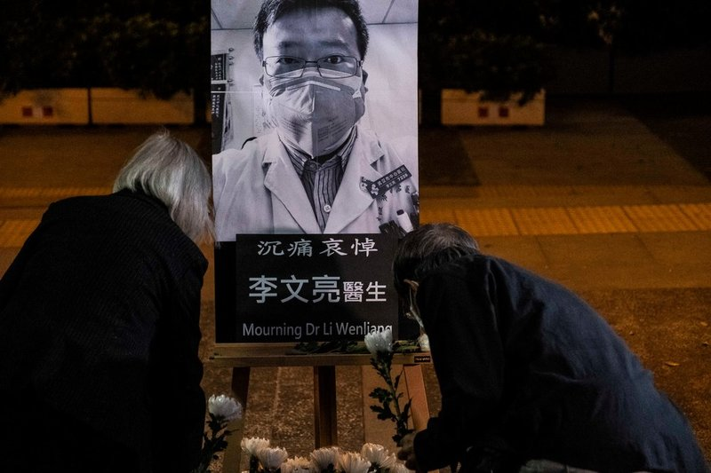
程益中：
（Replying to 纽约时报中文网）
这是中共宣传部门的常用手法。
经由华丽繁复的循环论证，把暴政的恶行淡化成个别干部的工作失误，把含冤暴毙的死者塑造成不忘初心、忍辱负重、大爱无疆、无私奉献的旷世英雄，
从而把坏事变成好事，把丧事变成喜事，最终烈士的光辉形象成为盛世帝王家谱的一条注脚，成为镶在明君英主权杖上的一粒金粉。
（编程随想注：想知道朝廷如何把丧事办成喜事？请看《党国应对灾难的标准操作流程——以上海大火为例》）
Michael Anti：
世界卫生组织官方账号向李文亮医生去世哀悼，呼吁大家纪念他的贡献。
https://twitter.com/WHO/status/1225440373880782848
（编程随想注：以下是诸多 Twitter 用户对上述推文的回复）
精骛八极：
Hao Chen：
李文亮医生与非典时的蒋彦永医生可能没法比较。
蒋先生是冒着巨大的风险为民众争取权益，直至今天。
而李文亮看上去就更像我们每一个普通人，他的离世之所以让我们很悲痛，是因为他像征着我们每个人的权利。
当他离开的时候，让我们感到我们的知情权和发声权也跟着一起不复存在……
萎缩怯弱的记录者：
李文亮是普通人，蒋彦永是真英雄
明知山有虎偏向虎山行的真英雄
初夜：
李文亮医生30号17:43在同学群里提醒，
凌晨1:30就被叫到武汉卫健委了。
31号上班就在医院签了自我批评的文件。
1月2号在派出所签训诫书。
什么时候对疫情反应也能这么快，独防民之术
李鳄鱼：
前八个医生都是传谣，轮到院长就是「疫情上报第一人」。
说什么并不重要，重要的是谁说的。
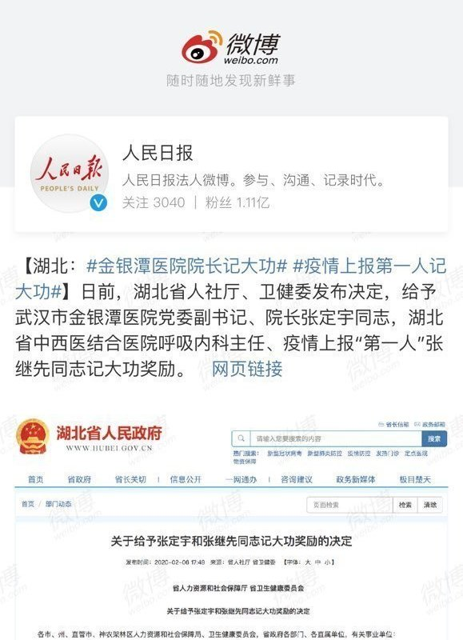
新闻大吐槽：
听党话，党性强，向党上报疫情的张继先被评委全国劳模；
党性不强，选择向亲朋透露内情的李文亮已经不在人世~~
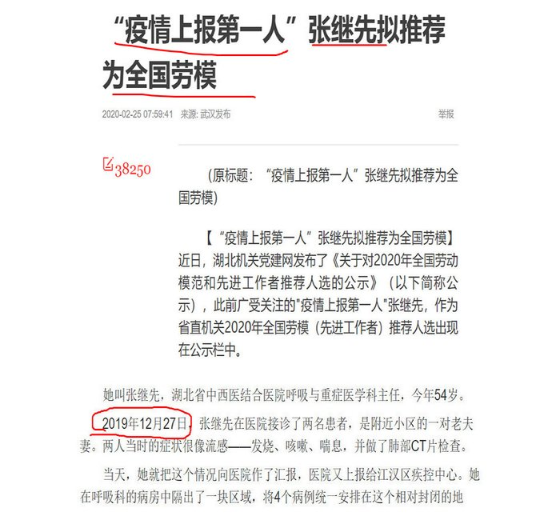 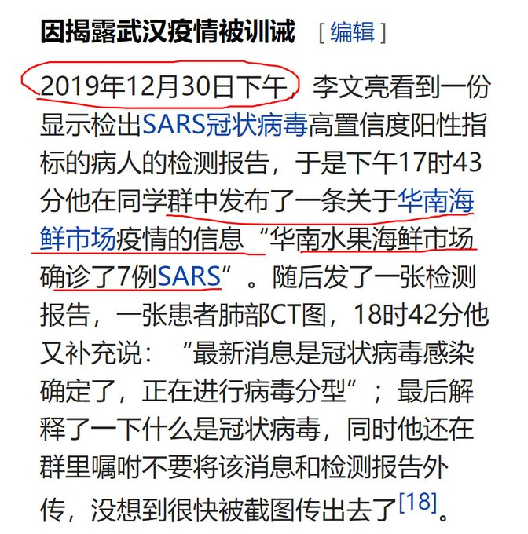
路德：
内部信息，李文亮的治疗极其不够到位和及时，医院院长有压力。
李文亮是八个里面被整得最惨的。现在他老婆好像在上ECMO！老婆还怀着孕，老婆现在据说也不行了。
李文亮的肺部片子，全白！根本就没有想过让他活！
这人在美国会被当作英雄！在中共国直接被整死！老婆未出世的孩子也遭殃！
只配抬杠：
因为有李文亮的名字，《李文亮遗孀付雪洁：看新闻才知道他离开了我》已被全网删除，离文章发布不到三个小时。
在界面新闻网站，更直接被改换为《决胜战“疫”，习近平这样排兵布阵》。
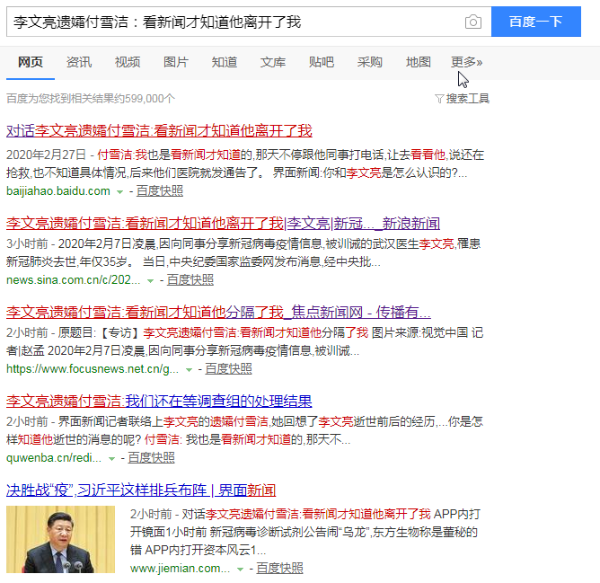
Chris：
在豆瓣看到，有人想邀幾位好友在線上直播讀詩以此來悼念李文亮。
沒想到被維穩部門帶走脫光衣服、底褲都不留、驗尿，然後被審訊了四個小時
原文：
https://douban.com/doubanapp/dispatch?uri=/status/2811799360/&dt_dapp=1
截圖防刪
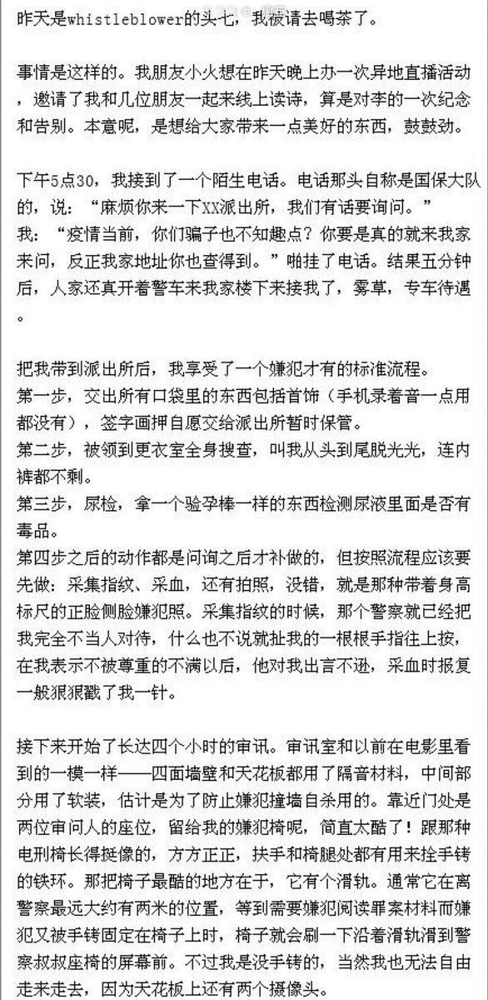 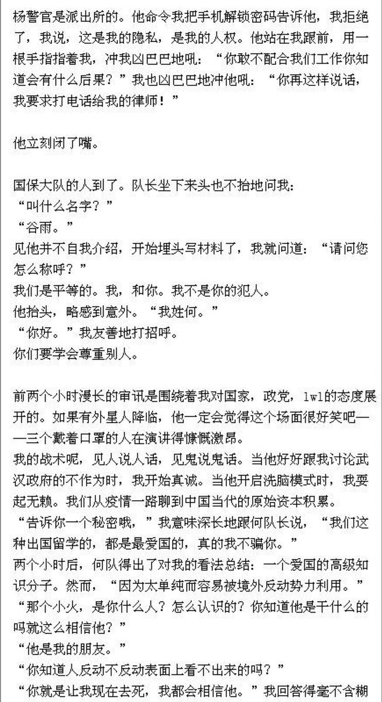
camour：
我的律师同学因为写了篇公众号文章，指出武汉市人社局把李文亮医生的工亡补助金算错了。
微信号被限制，说是15天后解禁。
荣剑：
李文亮医生7号凌晨两点多去世（民间报道是6号晚上九点多去世）。
当天网上掀起舆论风暴，国家监察委紧急下达决定，向湖北派出调查组，调查与李文亮医生的相关问题。
现在已经过去8天了，调查未有结果。
我在明镜访谈中说了，调查会很快，调查结论会很慢，鞭子高高举起，最后完全可能是轻轻放下。
只配抬杠：
三个星期了，建议再派个调查组调查一下这个调查组为何至今杳无音讯。
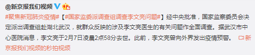
武汉普通人：
2月13日6时许，湖北省仙桃市三伏潭镇卫生院医生刘文雄在家中猝死。
由于刘文雄并非感染新冠，也未在规定的工作时间与地点死亡，2月20日仙桃市人社局作出不予认定工伤决定。
目前，刘文雄家属决定向相关部门申请行政复议。
一份《医生每日就诊量》统计表显示，刘文雄在1月12日至2月12日共接诊患者3181人。
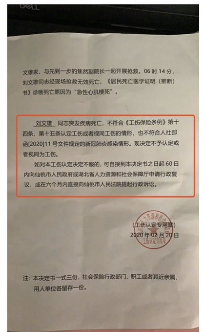
新闻大吐槽：
一个月接诊3000病人，因是在家中猝死，所以不算工伤！
不算工伤，就没抚恤金了吧？
白天拼死拼活救人的医生们，最好准备好铺盖卷，晚上就住在医院，死也死在医院。
不然你走了，家人都没法活！
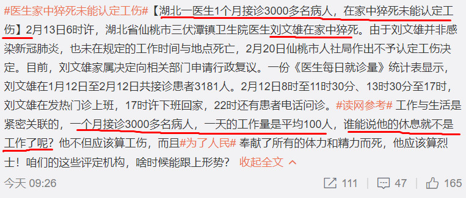
（编程随想注：以下是诸多 Twitter 用户对上述推文的回复）
编程随想注：
张文宏是上海复旦大学附属华山医院感染病科主任。以下是他在公开讲话中所说，引发网民热议。他也因此成了“网红”。
（编程随想注：以下是诸多 Twitter 用户对上述讲话的点评）
季诺碧亚：
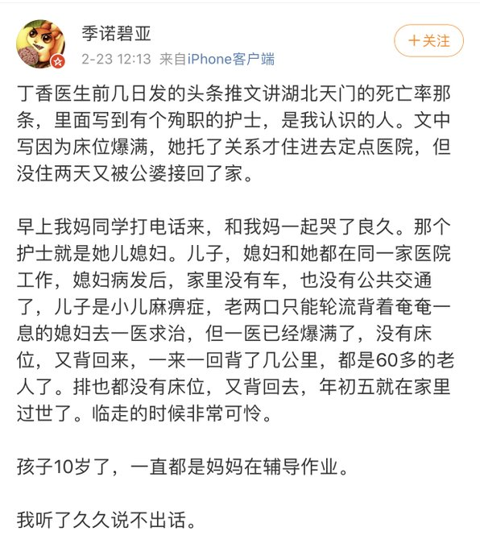
（编程随想注：以下是诸多 Twitter 用户对上述推文的回复）
武汉普通人：
《世界，我们需要帮助——中国医务人员柳叶刀发文，请求国际医疗支援》
https://mp.weixin.qq.com/s/lqSAMKHp0zsLXeE823TruQ
这是丁香园刚刚发布的文章，WHO刚走，武汉的真实情况又被反应出来了，武汉医院的所有医生护士朋友圈全部被监控了。
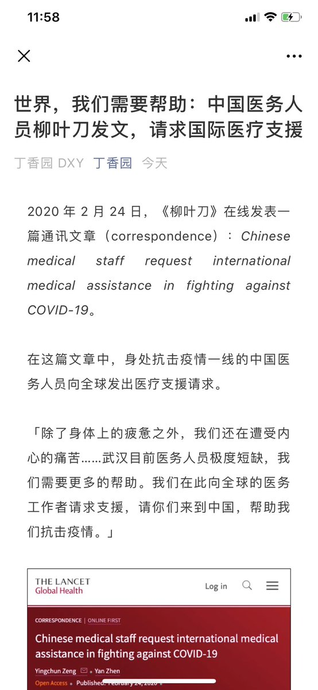 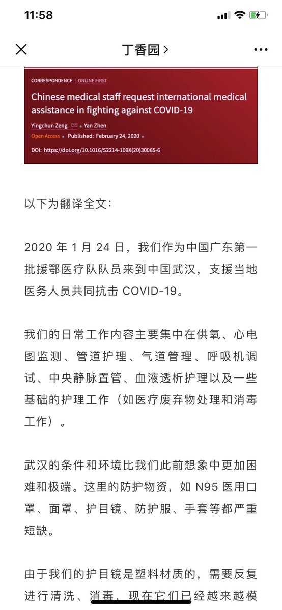 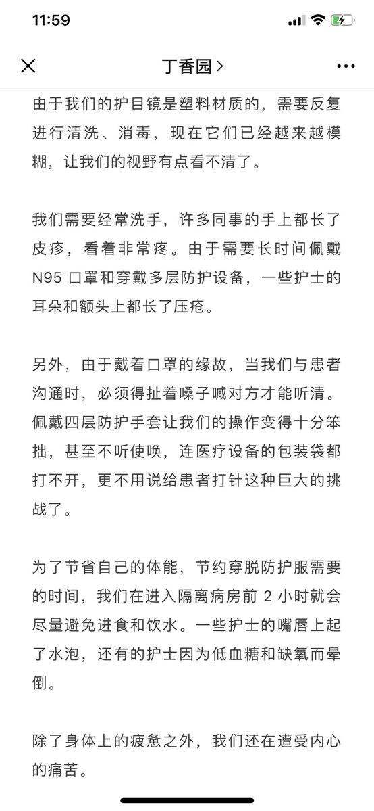 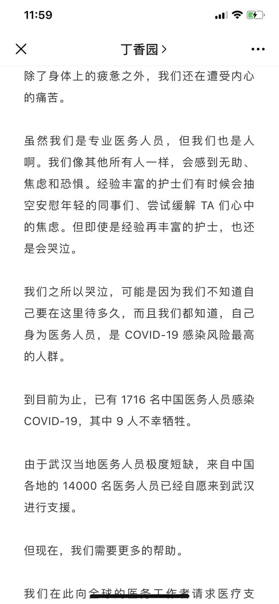
武汉普通人：
中方面对这种国际平台，再次辟谣，还要求人家道歉。。。。。。
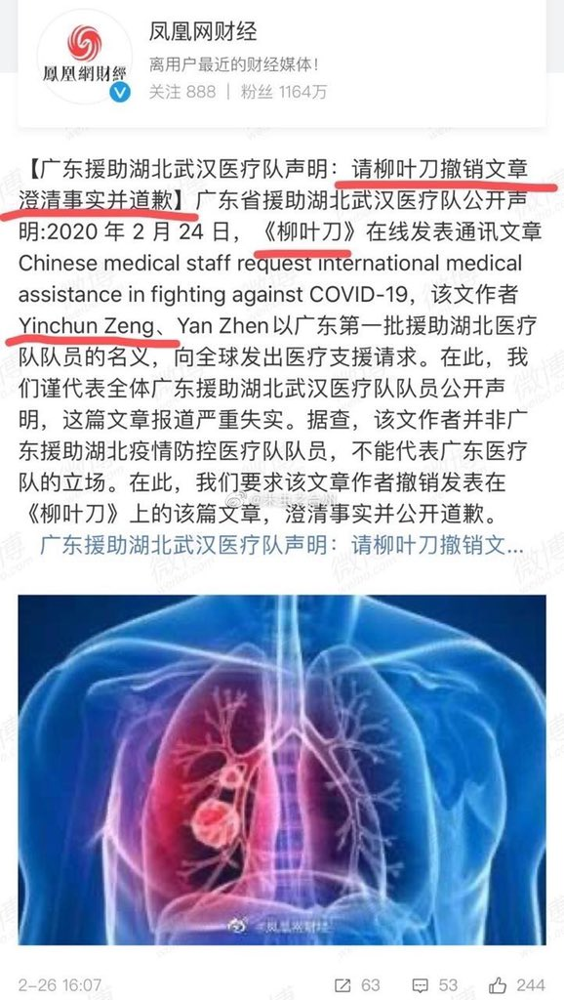
（编程随想注：以下是诸多 Twitter 用户对上述推文的回复）
只配抬杠：
刚刚，孝感中心医院呼吸内科副主任黄文军医生去世，42岁。
前两天的江夏区第一人民医院医生彭银华，29岁。
武汉市协和江北医院医生夏思思，29岁，接连去世三位医生。
全是青壮年龄，有较好的治疗条件，本人有医疗配合意识。
医生死亡都如此密集，近日武汉湖北的死亡人数真的如官报一样在下降吗？
“医生劳累造成免疫力下降”，这个观点不会对估测总体死亡人数造成影响。
因为新冠肺炎病亡人群本就是免疫力弱的人群，比如高龄和基础疾病人群。
即使该观点成立，也并没有使医生在病亡人群中有特殊性
Kim Borges 金不日：
还有林正斌，武汉同济医院器官移植副主任医师。
从医30多年，在自己工作了一辈子的医院里死的。
主治医师是自己多年的老朋友，林正斌生命的最后一条信息是：“宋主任，我上呼吸机了，救救我！”
只配抬杠：
2月21日，武汉市红十字会医院发布公告：
“普外科医生肖俊在抗击疫情一线不幸感染新冠肺炎，于2020年2月8日18时13分在武汉市金银潭医院去世。
医院对肖俊医生的不幸去世表示沉痛哀悼，向其家属表示诚挚慰问。”
2月6日李文亮去世。
2月7日舆情爆炸。
2月8日隐瞒肖俊医生的去世消息。
（编程随想注：肖俊医生2月8日去世，21日才发公告）
武汉普通人：
武汉市第一医院的医生护士们已经要饿肚子了……要跟大家“讨口饭吃”，求捐助米面粮油蔬菜禽蛋肉，十斤八斤都行。
已经对武汉现实的情况无语了。
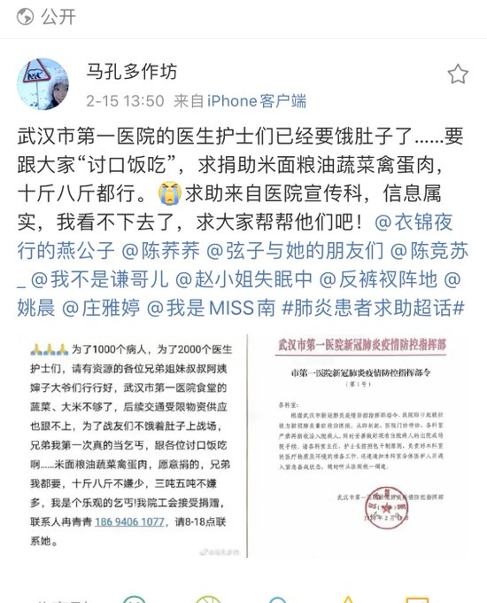 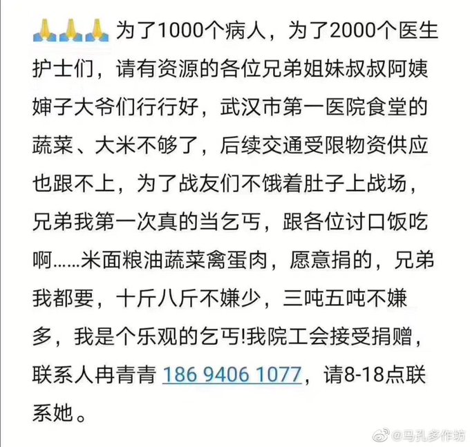 
武汉普通人：
北京援助武汉的医疗队对外开始求助了。官方和民间他妈的永远没有活在一个维度。
我在微信群里已经严重提醒了我不在湖北省的朋友，不要出去浪。。。。
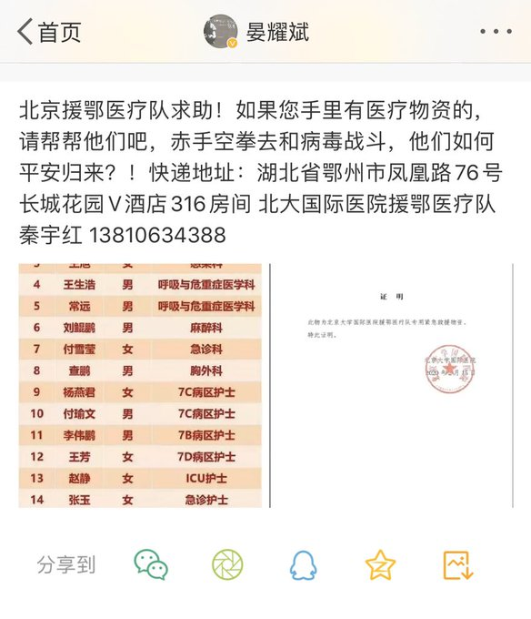 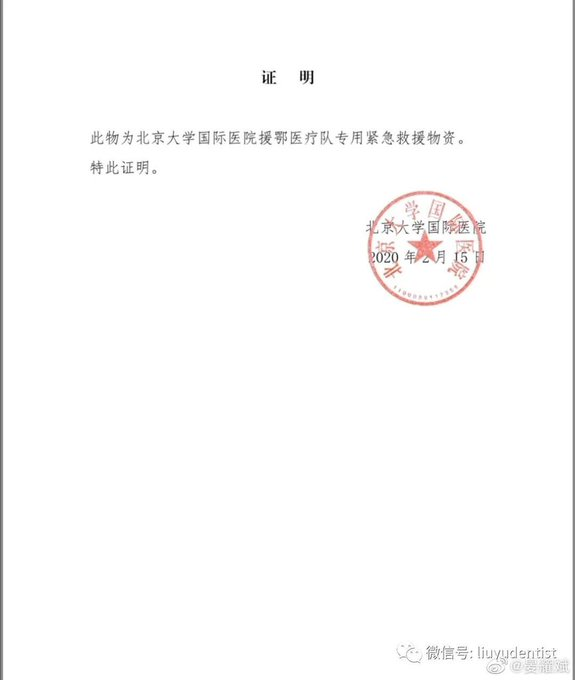 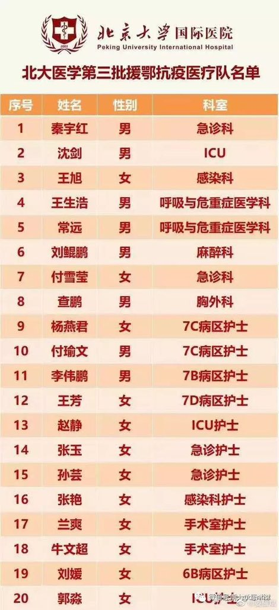
武汉普通人：
党国政府能不能主动干点人事，去世的思思医生，老公也是个医生，居然还要冲前线。
家里还有孩子的医生家庭，已经走了一个了，给孩子留个至亲吧！
建议这种家庭，定个制度不能再参与一线了。
对于大国的China，不缺一位医务人员。但是对于这类家庭的孩子，他们只有一个爸爸妈妈。
默默：
这是武汉的一位医生朋友刚刚发的朋友圈
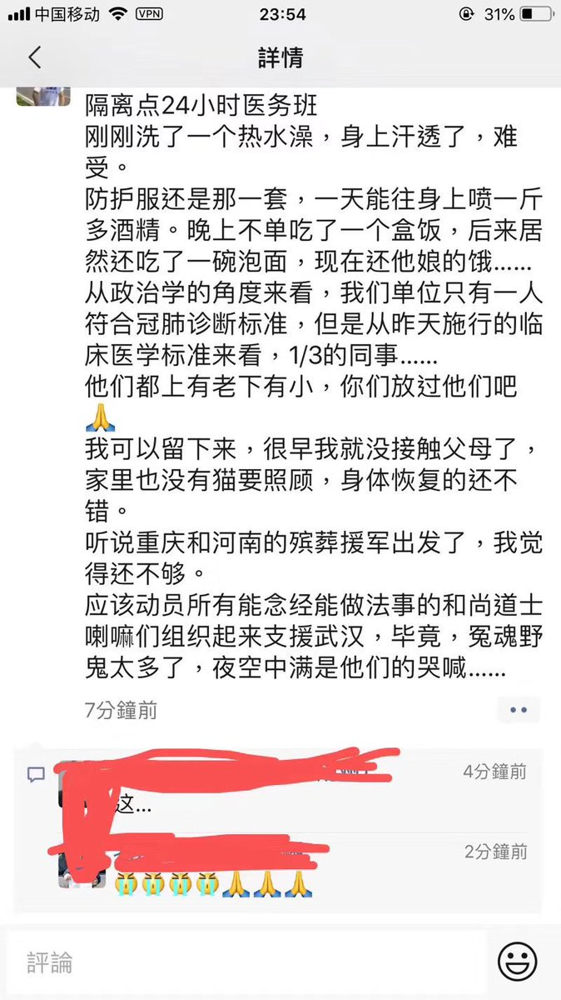
黎明：
一名护士蹲在路边吃饭，不远处的丈夫和孩子正看着她。
湖北省十堰郧西护士江世娥，正月初二上班，怕传染给家人，一直不敢回家。
第25天，在护送一名病人的时候路过家楼下，老公穿着睡衣，带着儿子，拎着刚做好的饭菜把它送到路边说：
“儿子想你了，你把饭菜吃完，我们就在旁边看着你”。
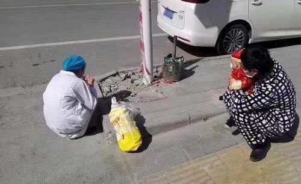
黎明：
我把这张照片和这段文字发给了在上海一家医院呼吸科工作多年的医生朋友。
他说：“一线医护人员是不能接触家人的， 即使结束了也有两周的隔离期。”
并说，“最起码要保护好自己的家人。”
我想起了作家方方的话：时代中的一颗灰尘，落到每一个身上都是一座山。
【常凯导演遗言】
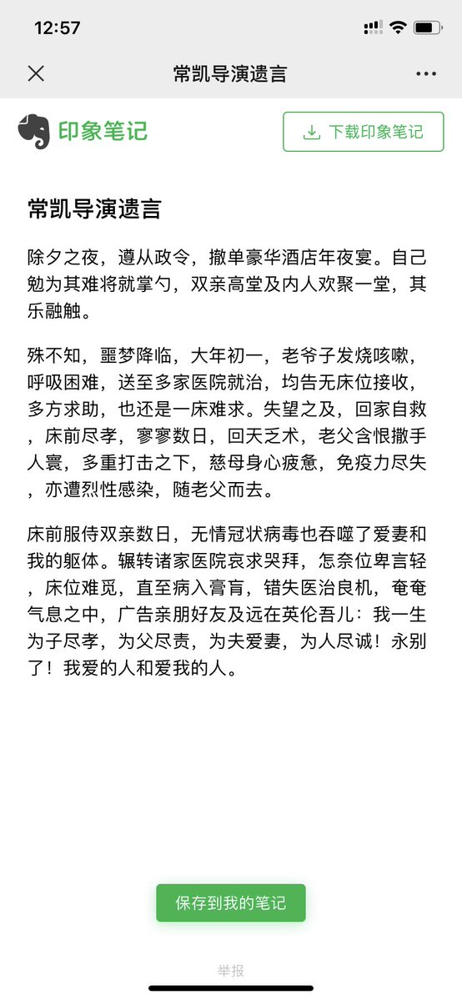
月光博客：
据财新网称，湖北电影制片厂员工常凯与武昌医院柳帆为姐弟关系，姐弟俩与父母4人于17天内接连去世，姐弟二人分随母姓和父姓。
1月25日，常凯父亲出现新冠肺炎感染症状，三天后常凯父亲离世。
2月2日，常凯母亲因新冠肺炎去世。
2月14日凌晨，常凯因新冠肺炎去世，当天下午，常凯姐姐也因新冠肺炎去世。
（编程随想注：以下是诸多 Twitter 用户对上述推文的回复）
石扉客：
我友老唐说，灭门之祸，常规是车祸空难等小概率事件。
这次武汉之疫已有多例，真是惨绝人寰。
我的感叹是，常凯老师本系名导，功成名就，阖家安居在大武汉，孩子也早送到国外，应属岁月静好的典型家庭，大疫之下灭门。
想象下我们这样家境条件可能还不如他的普通人，易地而处将会是何种凄惨光景？
一只找父亲的杨：
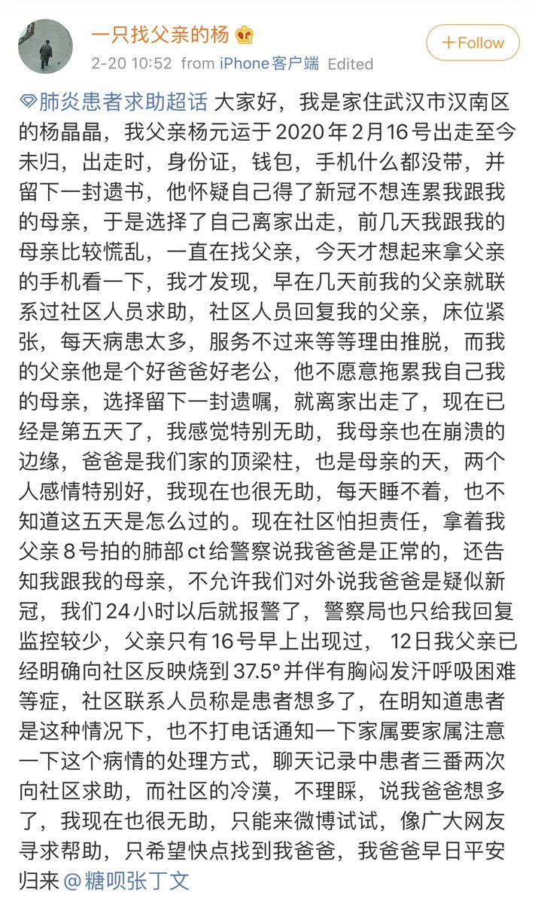
一只找父亲的杨：
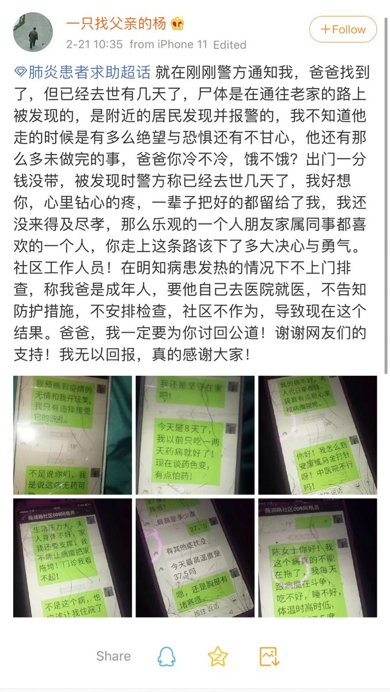
一只找父亲的杨：
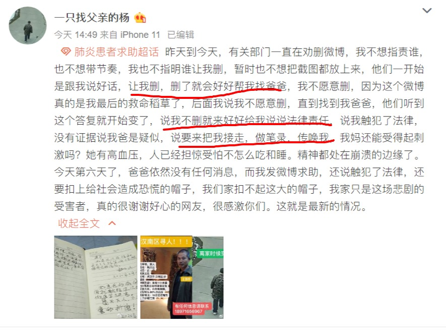
《武汉封城一月祭，听听“尘埃们”的声音 @ VOA/美国之音》
（编程随想注：以下是此文的摘录，引文中的粗体是俺标注滴）
Sook：
真的太难过了。掌权者从来都没有把人当人看过。
这种时候还要求删帖是真的没有丁点同情心。
优秀党员哈里发：
枕头又泪湿了，不敢再继续看下去
风携着心：
父爱如山
cosren：
一场人间惨剧，多少国仇家恨……
弗雷的马Freydom：
不能忍
難料如陰，動如雷霆：
共產黨存在的一天就無公道可討回，無可討回公道...
天高云淡：
这肯定不算武汉肺炎去世的
吐槽工程师：
移民最好的时候是十年前，第二好是现在。
你感受到父亲离你而去的痛苦，为了不让你的儿女再受这种折磨，真的要开始考虑移民了！
在国外，再苦再累，难道还能比这更惨吗？
李南飞（我可以说不吗）：
1. 李文亮医生，34岁，感染到去世，28天！
2. 红凌，生物学博士、教授，53岁，确诊到去世，13天！
3. 杨晓波，前黄石市市长，现长江财险董事长，57岁，确诊到去世3天！
4. 常凯，湖北电影导演，55岁，没超十二天。
5. 刘智明，武汉市武昌医院院长，51岁，有钱，有现成最好的医疗条件。26天！
《公民记者方斌视频号召国人“全民自救、反抗暴政”，昨遭中共当局破门抓捕 @ 维权网》
美猴王：
方斌冒着被感染病毒的生命危险，进入医院抢救室，拍病人，数尸体，将真相呈现在全世界面前。
他拼着被捕判刑把牢底坐穿的勇气在油管发布视频，大声疾呼“全民抗争，还政于民！”
方斌正值壮年，有车有楼，温饱无忧。
他为了推进中国民主化运动而被捕，现在轮到我们为他做点力所能及的事了。
凡有良知的人都不能忘了他！
华涌：
方斌被抓的消息被几个渠道确实，今天中午警察和便衣与方斌僵持很久，最后消防人员破门而入，方斌被抓捕！
中途还防备方斌跳楼，最后在下午三点方斌被抓。
寻找方斌！声援方斌！

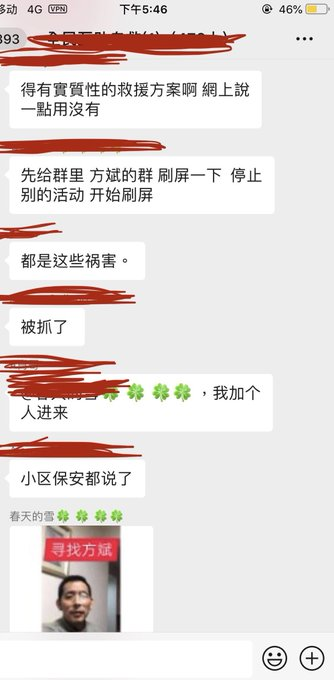 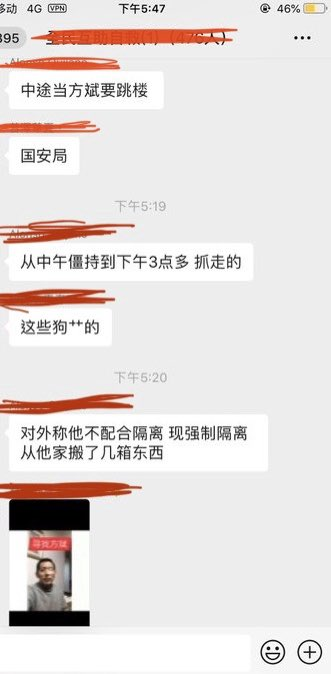
《陈秋实：一个不想当记者的演说家不是好律师 @ 德国之声》
Hu Jia 胡佳：
北京公民记者陈秋实被捕前最后一次报道。
恳请更多国际媒体关注被以“强制隔离”名义强制失踪的陈秋实。
#ChenQiushi #ChinaCoronaVirus #WuhanCoronavirus @chenqiushi404 @Xuxiaodong3
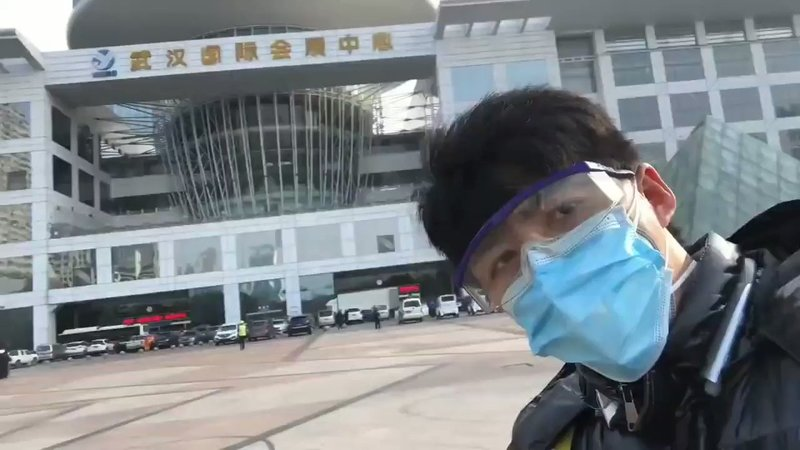
禁闻网：
网上呼声：不要让陈秋实变成第二个李文亮
#中国 #中国人 #公民记者 #李文亮 #武汉 #武汉疫情 #疫情 #真相 #陈秋实
Maze Mazy (麻吉妹子)：
恕我直接，人民日报之流皆不如陈秋实的一坨屎；央视之辈全不如李泽华一根吊毛。
华涌：
刚刚李泽华被带走，请朋友们关注！
一个95后的小伙子，传媒大学毕业，CCTV7节目主持人。辞职后做自媒体“不服TV”。
近日入武汉关注武汉疫情，并在YouTube发送视频。
2020年2月26日晚10点多在武汉一民居被带走。
华涌：
95后公民记者李泽华在被抓前，隔着门对国保慷慨陈词的讲话：
“鲁迅说：咱们中国自古以来，就有为民请命的人，就有拼命硬干的人，就有舍身求法的人，这才是中国的脊梁。我不愿吞炭为哑，我也不愿意闭目塞听。”
请朋友们为这位帅气、勇敢、正义的小伙子发声、声援、抗争！言论自由无罪！共产党放人！
小婷：
李泽华武汉遭国安追捕
#李泽华 他表示，自己来武汉的所为符合宪法，无愧于父母无愧于传媒大学，无愧于这个国家并表示自古以来就有为民请命的人。
他之所以从央视辞职，为的就是中国有更多年轻人站出来，但他知道理想主义在那个春夏之交已经死了。
之后他主动开门，信号消失。
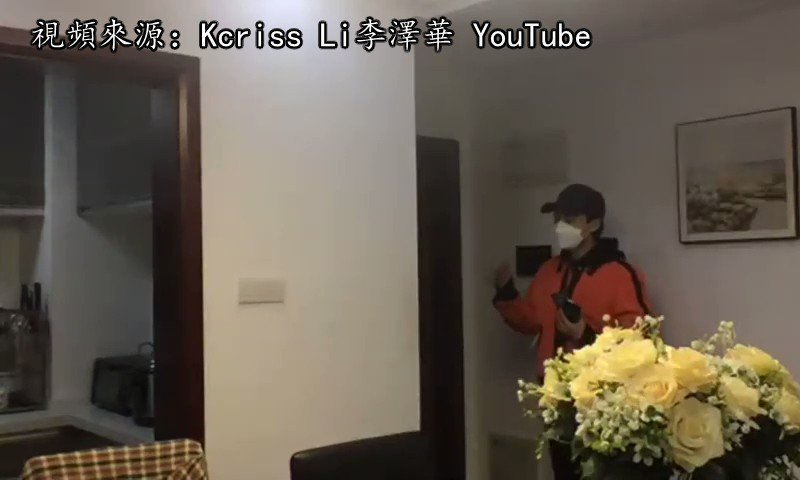
方方：
我们都还被关在家里，足不能出户。而另有一些人却已在大唱颂歌，连胜利的书都看到了封面（如果不是恶搞的话）。
武汉人有什么话可说？焦躁也好，烦乱也好，我们都得忍下来，是不是？
胜利也是你们的胜利。
方方：
这几天，死亡者似乎离自己越来越近。
邻居的表妹死了。熟人的弟弟死了。朋友爹妈和老婆都死了，然后他自己也死了。
人们哭都哭不过来。
方方：
特别想说一句放在心里很久的话：中国那些极左分子，基本上是祸国殃民式的存在。
他们太想回到文革，太仇视改革开放。
一切与他们观点不同的人，都是他们的敌人……
用那种“洒向人间都是恨”的粗暴语言，甚至更为卑劣的手段，低级到不可思议。
我特别不明白：从来没有人会删掉他们的帖子！
方方：
媒体人也可怜，可谓两头受气。上面不要他们讲真话，下面要求他们讲真话。
他们经常无从选择。更多的时候，他们只能选择听上面的。
既然如此，当下面的人骂他们时，他们大概也只能承担。
石扉客：
前湖北作协主席方方的系列封城日记博客，先是发在新浪微博，后发在自己博客，相继被删除，现在只有财新博客还在勉力维持。
这个系列是目前我看到的向外界传达疫区民众声音的最好平台，感性理性兼具，宏观微观皆有，真诚悲悯，如歌如泣，因而也成为五毛撕咬的主要目标。
Lucy：
2月2日，方方讲述武汉悲惨故事时，提到她以前说的：时代的一粒灰，落在个人头上，都是一座山。而我们偏偏处在一个尘土飞扬的时代。
2月4日，方方直言此次大疫教训极为沉痛：必须一层一层追究，一个也不放过。否则对不起那一个个死者。
2月7日：比病毒更让人无奈的是不让人说话，但是我的记录还得继续。
高伐林：
自称“主业是读金庸”的六神磊磊，针对有人批评方方“唉呀我心情已经好沉重了，你们怎么不写点让我开心的”说：
我们是成年人，成年人不要对世界撒娇。长大是自己的事情。
不能要求每个人都当赤子，但是你可以不做巨婴吧。
要当鸵鸟，哪里找不到沙子把脑袋埋起来？
你已供养了大量传媒和作者告诉你世界温暖了
王局志安：
方方不是记者，不可能去核实每一个信息的真伪。
她的价值在于，她作为武汉城中的一份子，记录下了自己的见闻和感受。
微博上还有位叫阑夕的，也在坚持写封城日记。
他们共同为武汉这座城市遭受的苦难，留下一个相对系统的个体记叙样本。
反过来说，如果这么大的灾难都没人记录，那就太悲哀了。
chengaiguo：
（Replying to 王局志安）
王局健忘啊，2003年安徽作家陳桂棣和吳春桃夫妻的报告文学《中国农民调查》，县委书记张西德还起诉了他们夫妻
（编程随想注：俺的网盘上分享了《中国农民调查》的电子版）
Lisa：
可惜的是，这些“民间”记录在灾难过后存活下来的可能性极低，更别说流传了。
墙内必然一片歌功颂德 岁月静好...
Murong Xuecun慕容雪村：
环球人日之类，中国境內称“新闻媒体”，更准确的应该叫宣传机器。
它们会不会报道一些事实？当然会。
但正直的人应当了解，它报道这些事实，也只是政治宣传的一部分，就像药物的副作用，不能当成主要疗效。
如果说过去的中国报紙还有一点新聞理想，在『央视姓党』的当下，仅剩的那点理想也已荡然无存。
编程随想注：
用【客观事实】进行洗脑，是有很多技巧滴。俺曾经写过一篇
《比“欺骗”更狡猾的洗脑——基于【真实数据】进行忽悠》
以下是诸多 Twitter 用户对上述推文的回复。
石扉客：
这段时间，新华社和光明网先后吆喝“让人讲真话”，说明自数据黑洞让官方自己也大为头疼之后，上面确实有让宣传口出来多少平衡一下的意向。
但连这些吆喝都被迅即删掉，连李医生去世都快三七了还背着训诫的处罚，你让人们怎能不将信将疑甚至冷嘲热讽？
为政在于诚，民无信不立，你越口是心非，朝野之间就越渐行渐远！
荣剑：
新华社和光明日报今天不约而同地刊发了鼓励讲真话的文章。
但颇具讽刺意味的是，新华社的文章已经被删，光明日报的文章能存多久尚未可知。
新华社和光明日报都是在中宣部领导下的官方媒体，掌握主旋律和政治正确，它们的真话都说不出来，那就更别提草民说真话。
究竟是哪个部门害怕讲真话或不让人讲真话？
文涛：
眼见着越来越多的记者编辑转行，我所在的好些个前同事前同行群，基本成了公关公司的员工俱乐部。
所谓的新闻理想，在各种禁令和打压下，早已支离破碎。
追求新闻自由？必然会失去人身自由，勇士不多，英雄就更少。
Hong Hong：
網友爆今天最揪心的一個故事：
2月24日上午48廠一小區志願者上門查體溫，
一小男孩開門，問家裡幾人？
男孩答：他跟他爺爺。
志願者問他爺爺呢？男孩說，已經死幾天了。
男孩四五歲左右，後志願者報警，警察，醫院全去了。
問男孩為什麼不出去，回答：爺爺說外面有病毒，不能出去，在家吃了幾天餅乾了
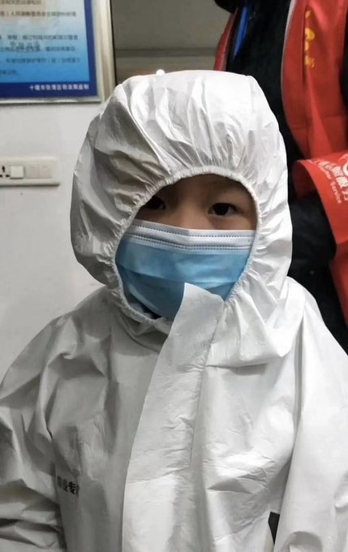
Michael Anti：
这事太惨了。希望疫情过去后，国人还能记得这是湖北之难、国殇，克制不要在任何情况下喜洋洋地歌颂，
尽快把这次没发挥作用的疫情灾情警报系统修补好。
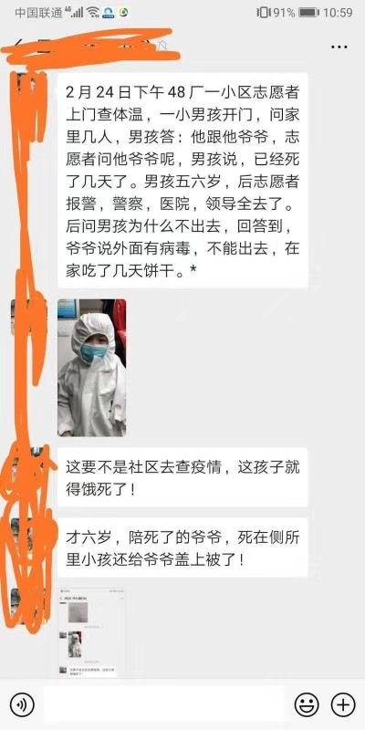 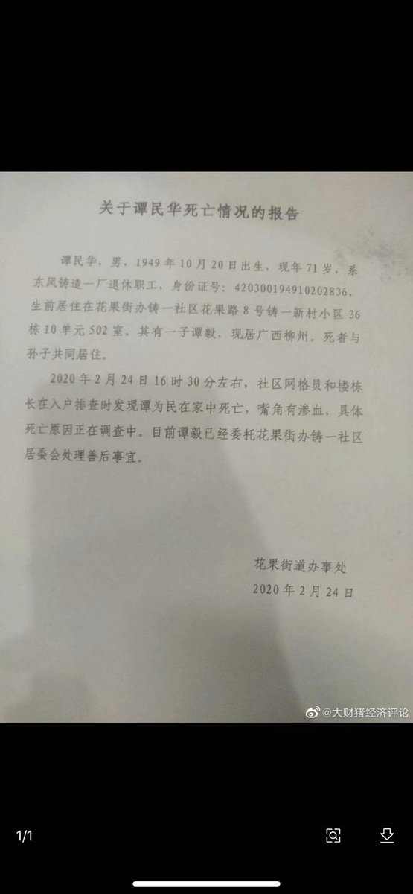
（编程随想注：以下是诸多 Twitter 用户对上述推文的回复）
多勒个多Ts：

老司机：
疫情阻碍运输 蜜蜂活活饿死 养蜂人上吊自杀
生在中国，活下来全靠运气
养蜂人刘德成死了。在他的蜜蜂因中毒、转场受阻大量死亡之后，于2月13日在云南上吊自杀。
他的死将蜂农这一群体带入大众的视线，也让人们知道新冠肺炎疫情影响的还有这么一个行业，这样一群人。
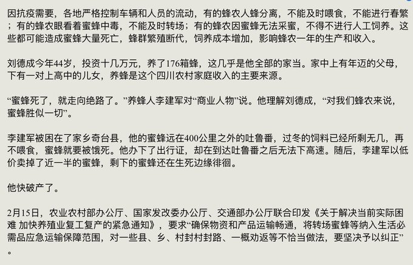
野山：
大批养蜂人困在云南境内，花期已过，蜜蜂农药中毒，没钱买饲料饲喂，
眼看着四川油菜流蜜却无法转地，蜂农结束了年轻的生命，为之惋惜
武汉普通人：
痛心，养蜂人在云南转不了场、蜂中毒，想不开了上吊自杀。
这个影响力是真的防不胜防啊。。。。。。。。。。。。
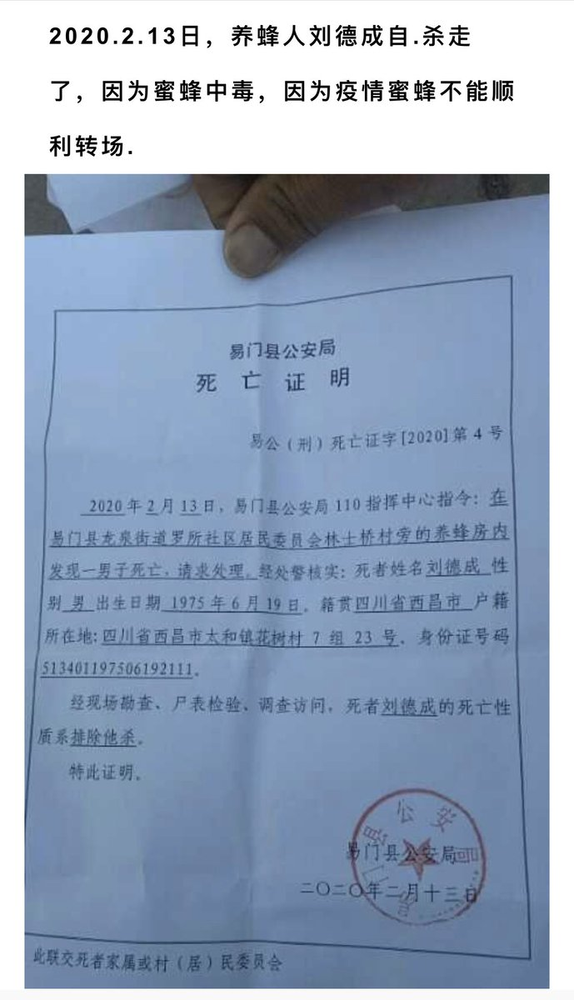 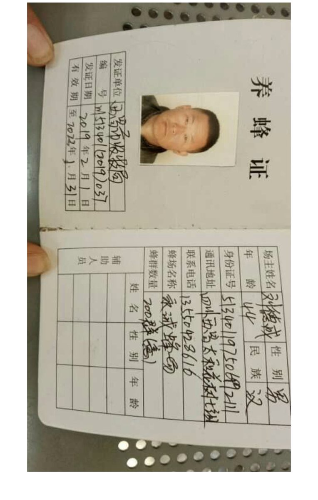
劉貽牧師：
看这些报道，心会滴血。
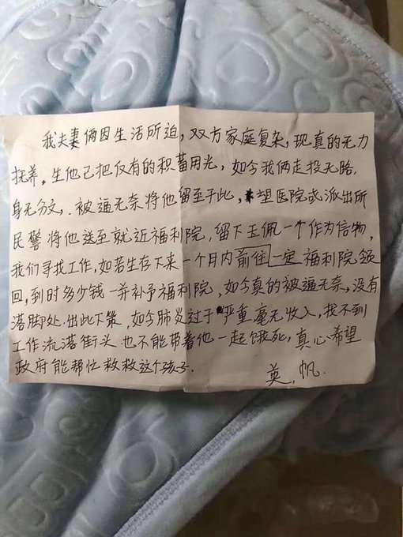
（编程随想注：以下是诸多 Twitter 用户对上述推文的回复）
财经冷眼：
家人因武汉肺炎被隔离，湖北17岁脑瘫儿独自在家6天后死亡。
屎尿中活活餓死，人間慘劇啊
https://youtu.be/-GTlbE-x8cg
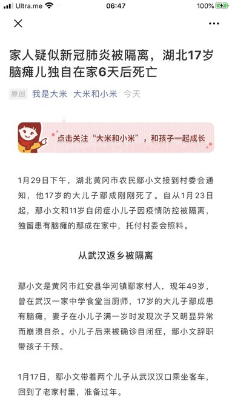
巴丢草 Badiucao：
帮帮他就是帮帮自己
他们不是病毒，他们只是想活，和你一样！
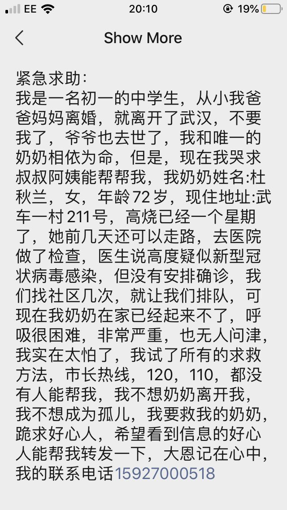
（编程随想注：以下是诸多 Twitter 用户对上述推文的回复）
stupidwz：
从湖北官媒和粮储官员宣称储粮够消费一年，再到从黑龙江急调3000吨大米，仅用两周时间。
中国自古瘟疫过后往往伴随大饥荒。
中国是世界最大的粮食进口国。2020年中国粮产量应为5.54亿吨，而实际需求7亿吨，缺口近2亿吨。
粮食自给率不足80%。当粮食自给率不足90%，社会可能不安；如不足70%，可能引发动乱。
反共段子手：
湖北人也太能吃了吧，5天吃掉半年的粮食。
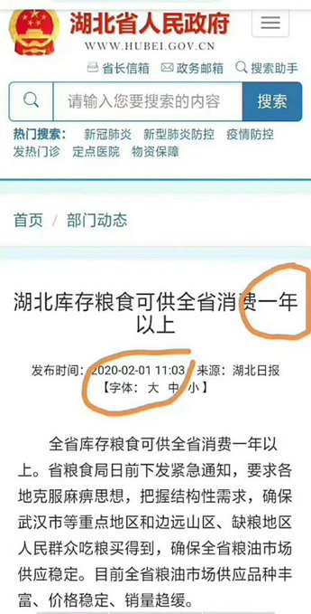 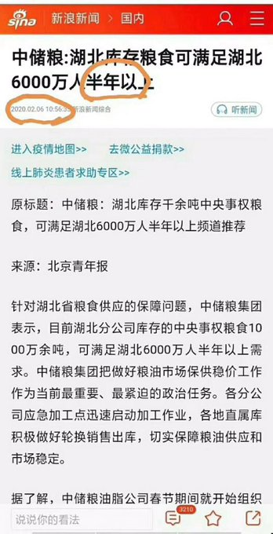
记者李满：
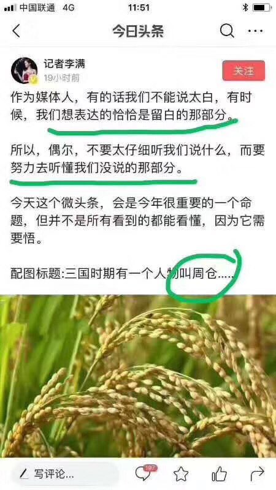
湖北难民高飞19878794300：
（Replying to 记者李满）
记者没有说破，但这个危机早就发生了。
是的，就是粮食危机，比经济危机更严重。
我之前也批判政府不让农民摘菜种菜，禁止恢复农作业，却一定要硬着头皮搞复工，是愚蠢不可及的
花醬不思蜀：
現在的真實武漢
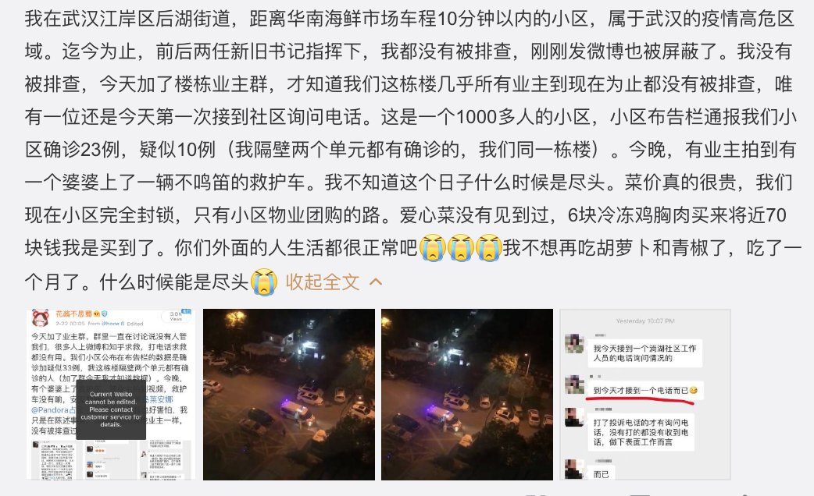 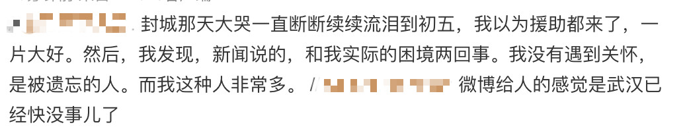
極度深思：
一段来自疫区的语音：
“同志们，我刚刚在楼下看到我们九栋的一个老爹，黄冈的，没买到菜，摘树叶子吃，我现在都想哭了……”
一个民族
所遭受的苦难
都是这个民族的民众
自己选择的结果
独行侠：
今天，有人確認湖北農村已經生活用品告罄；
在大部份地區，米五天買一次，還貴。
女性必須的衛生棉已經斷貨一個星期，現在最少數十萬年輕女性沒有衛生棉。
習近平不到一個月就把中國中部最富裕的省，打到非洲草原生活水平。
坦克手贝吉塔：
刚刚接到社区小区派出所的联合通知，停止一切居民自行组织的团购，停止骑手外卖以及代买，禁止供货商在小区门口配货联系居民自取。
全部居民只能购买指定单位的商品。
疫情数据一天比一天好看，隔离措施一天比一天严格，买草纸搭卫生巾的套餐看来要推广了。
meilong：
家里没有水，什么吃的都没有了。这是一个确诊患了冠状病毒的病人在社区群的哭诉。
她老公儿子在确诊以后被强行拉走去隔离，她在家里弹尽粮绝。
像她这样的病人，在这次疫情当中，武汉不知道还有多少。也许最后还没病死，就已经饿死了。
你今天所受的全部苦难，都来源于你曾经的所有赞美。
变态辣椒RebelPepper：
不止是武漢，周邊城市也很危險了，弹盡粮绝，要死人的
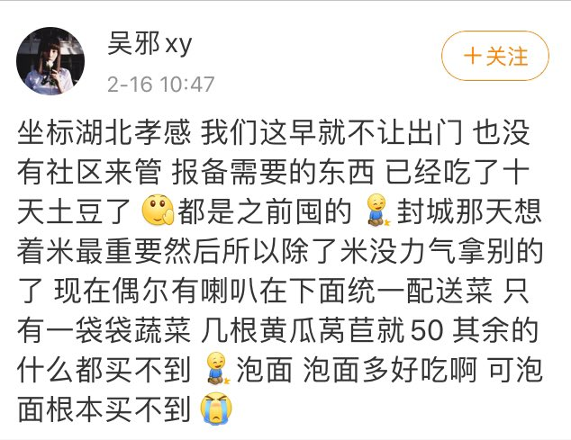 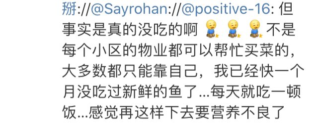 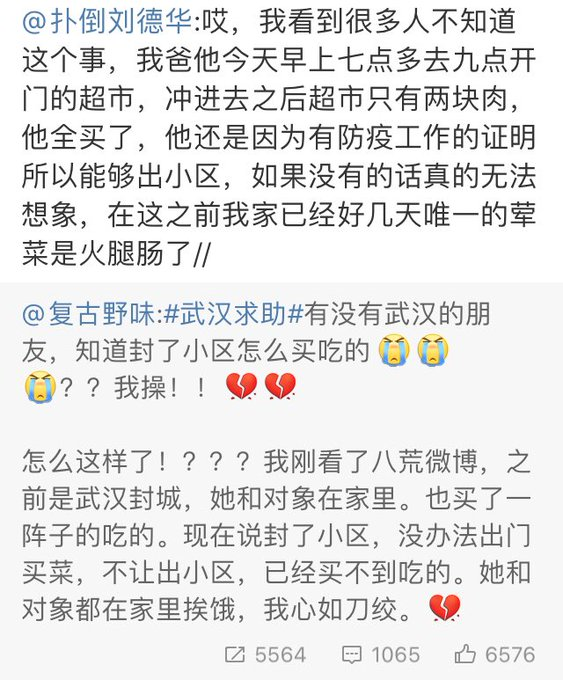
变态辣椒RebelPepper：
武漢饑荒已經來臨，這還是能上網呼救的，都餓成這樣了，還有多少不能上網的人呢？
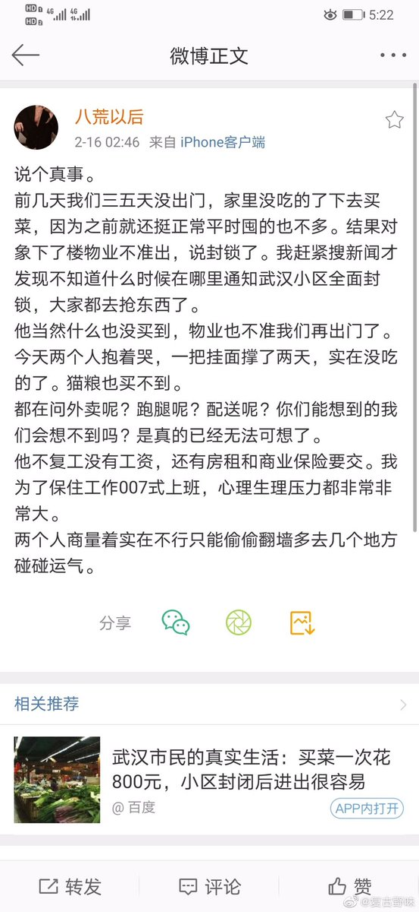
变态辣椒RebelPepper：
我们现在听很多人大谈“战时状态”，但随便一个行政官员就能够宣布“战时状态”吗？
这必须是要经过最高立法机构决定的。
封城或者诸如此类的极端措施带来的伤害，一定会比病毒本身还要大。
方舟子：
这是全国性人道主义危机。
只管收治新冠肺炎患者，不管收治其他疾病患者，因别的病死了白死，没人统计。
方舟子：
湖北天门，家家户户封门20天，没人送饭菜，要自己准备好20天吃喝。
敢提前出来的拘留10天。
这是人间？
Leon：
说白了，就算封城也至少是信息舆论和媒体自由体制下进行。
tg的封城就是让你们再家等死。居然1千万人会会老老实实呆着等死。
所以说韭菜永远不会明白，香港人为了一部恶法舍命抗争的想法。
这就是甘愿做猪和只想做人的区别。
大耳朵猫妹：
某人写的武汉封城的买菜
“超市可选择的食物蔬菜极少，而且每次要排好几个小时队。有时候很搞笑，超市员工把货架摆满货物之后，不是马上开放售卖，而是先要等一帮人忙乎拍照或摄像，等忙完这些之后顾客才被允许进入，一哄而上。”
这个拍照就是为了给官媒搞出供应充足的假象吧？
现在已经不让出门买菜了
大王朱利安：
精品排骨60一斤不贵，四斤240合理
&
我就想买一斤便宜点的边角余料回去随便炒个菜
前者是微博上盛世强民的世界观
后者是许多人真实可见的生活方式
所以强小将说“不贵！”
居民们在群里气得捶胸顿足。
兩宋遺風：
私人不准購物，只能單位購物，且需單位證明。
私自購物的顧客和老闆，都被傳喚至警局。
警察窮凶極惡，差點準備上銬。
武漢人已經完全任人宰割，連個人買些東西的自由都沒有了。
新闻大吐槽：
大门被堵，为了出去买点肉，女人化身蜘蛛侠，从10楼爬下，后被居委会抓到。
真是被蠢政逼到绝境的可怜人
Dr. Fieldbrook：
墙内说该女子有精神病史
方舟子：
（Replying to Dr. Fieldbrook）
爬楼女侠回来的时候手里拿着肉呢，这还不算买肉的“现实依据”，难道是偷来的肉？
把敢反抗的人都说成是精神病，就平安无事了，对吧？
方舟子：
2月6日湖北随州发生的事，不管是因为什么原因要爬楼，用脚后跟想想也知道与把人关在家里有没有关系。
那些跑来“辟谣”的，用脚后跟想想也知道是御用水军。
Song Ma：
对了，还有因为楼道封锁，不得不从10楼阳台徒手爬下楼，去买一点物资的柔弱妇人。
凡人皆有畏惧之心，谁都知道那个高度一个失手就能摔死，但没吃的也要饿死啊！
凡能够坐在家中解决问题，何必冒死徒手攀爬10层楼？
有关管理者不思改正，不在这个妇人面前脸红道歉，还有脸去处罚？
滑天下之大稽。
大耳朵猫妹：
新疆那个喊要饿死的视频背后，是好多类似这样的情况。
（编程随想注：以下是诸多 Twitter 用户对上述推文的回复）
Ray Lau：
大家来看，这就是捐的菜的下落之一
（编程随想注：以下是诸多 Twitter 用户对上述推文的回复）
夷长：
官萱造假翻车记
（编程随想注：以下是诸多 Twitter 用户对上述推文的回复）
T_ina 鱼：
方舟子：
武汉禁止居民外出买菜，只能定购高价送菜。
大妈说：“武汉的菜谁吃得起啊？谁在趁疫情发财？”
不仅定价高，而且明显缺斤少两得厉害。
kim：
我们小区（武汉）从小处着眼主要是有几位热心业主在帮忙团购菜等生活用品，也有邻居以社区网格员的身份从单位（学校）到小区里张罗。
物资没有问题，但是团购过程中能看到人性自私的一面。
志愿者也好像分了好几个梯队各自为战，很像建党初期的留苏派，留欧派以及毛派。
这个病教人看到了不少。
于溟：
#中共國 湖北荊州
捐助的蔬菜不发給需要的市民，全部被社区囤起來。市民想买都买不着，而他们社区人员們先挑好的拿走！
评：这是什么世道，一场瘟疫，所有人都原形毕露！
$0ńñø /\/\¡@〇：
《火神山医院完工之后，一位建设工人的返乡纪实 @ 财新网博客》
（编程随想注：以下是此文的摘录，粗体是俺标注滴）
《武汉送药人——义务送药被举报“赚差价”，配合调查期间，奶奶脑出血昏迷入院 @ 腾讯网》
武汉普通人：
武汉送药人，义务送药被人举报“赚差价”，配合调查期间奶奶脑出血昏迷入院。
评论区都是网友说实名为他担保。
哎。。。。。。社会呀，社会呀。
（编程随想注：以下是诸多 Twitter 用户对上述推文的回复）
Murong Xuecun慕容雪村：
无论是饭桌闲谈，还是公开发表文章，我都不喜欢引用那些道听途说的消息、难以查证的事实。
如果一个人的文章中頻頻出现这些东西，我就会有几分鄙薄之意。
但在此刻的中国，我們也需要明白，那些在微信群中流传的瘟疫狀況、抓捕封堵信息，是对不自由的生活的救济。
即使它是假的，也比只有一种声音好。
方舟子：
湖北孝感政府强制所有城镇居民必须足不出户，违者处10日以下拘留。
这下连采购、放风的时间都没有了，连犯人都不如。
这比封城厉害多了，人类历史上前所未有的壮举，除了厉害国，还有哪个国家干得出来？哦，还有朝鲜。
下一步就该把居民都饿死，死了就没新冠肺炎，其他原因死亡不必统计，不影响政绩。
方舟子：
老人在自家楼下晒太阳，被抓去关15天。
方舟子：
湖北咸宁街头，特警见人就查，没有通行证的就抓走。
这阵势像是敌占区查良民证。

方舟子：
五十年前的红卫兵小将复活了。
方舟子：
湖北咸宁的社区书记说，要求夫妻分床睡只是建议，不强制。
通知里说的是“家人之间必须隔离”，还不叫“强制”？只是没法真的强制而已。
胡总编说，要求夫妻分床睡，说明防疫战争打得艰苦卓绝，付出了重大代价。
不知书记本人带头分床睡了没有？不知胡总编当年萨斯期间在北京付出这样的代价了没有？

Jian Alan Huang：
藏族僧侣自焚抗议我没有祈翠，
维族人押往集中营我没有祈翠，
法轮功学员被活摘我没有祈翠，
港人要求民主普选我没有祈翠，
上访者律师被绑架我没有祈翠，
儿童失学老人露宿我没有祈翠，
地沟油毒奶粉假疫苗我都没有祈翠，
最后当我没戴口罩被铐走，已经没人为我祈翠了。
（编程随想注：稍微解释一下——【翠】是墙外讽刺习包子的流行语，影射“习卒”）
Maze Mazy (麻吉妹子)：
日籍华人女，靠医疗行业身份，以救助武汉为由，向日本多家医院骗取口罩，转手高价倒卖朋友圈。
一顿骚操作，两头国难财，血赚2000万日元！事后嚣张到在朋友圈炫富。
真的很受不了这些搞“赴日医疗”的人渣。平时利用日本福利漏洞，把大批中国人送到日本来看病，赚取中介费。搞得日本民间对华人怨声载道。
Maze Mazy (麻吉妹子)：
居然还是成都人。京都在住？
日本国籍都被他们污染了。
我说怎么药店一夜之间被抢空了，amazon上口罩涨了十倍，消毒酒精涨了七八倍！都是这帮垃圾在抢货囤炒呢！
事实证明日本人民的爱心，不但能喂狗。还可以卖钱。
Maze Mazy (麻吉妹子)：
后续简直吃瓜了
声名狼藉被人肉之后，靠倒卖口罩的新晋壕大姐，找来关西华文时报的总编丛中笑吃了一顿晚餐。
丛中笑不但帮忙写了洗白文，还亲自上阵，发洗白视频。视频中他自称“誓死捍卫每一个人说话的权利。”
结果这个丛中笑被扒出2007年，借采访之便，偷摸女生下体痴汉行径被日本警方逮捕的黑历史。
Maze Mazy (麻吉妹子)：
最近我们全公司上下都在抱怨买不到口罩，副总还开玩笑问我知不知道哪里能买到口罩？
我就脸上发烫，因为我是公司里唯一一个中国人。
关系很好的邻居老奶奶跟我诉苦，花粉症犯了买不到口罩，我心里别提多难受。
你们懂那种明明没有做错事，却因同胞的无耻，而心虚心痛的心情吗？
亚洲金融：
清华毒王，#邓晞，37岁，海通国际董事总经理。
邓晞隐瞒父母病情，入住香港多家酒店，最终确诊被斥为“行走播毒”，令人气愤！
邓晞坐拥半亿豪宅，接患上 #武汉肺炎 的父母，从武汉逃难到香港。
不住家里，在三个香港酒店之间逃窜。
邓晞肯定被评为年度毒王，
#清华 本科，哈佛硕士，还是生物信息专业。
华人新闻：
这位37岁的 #海通国际 女高管，22号将父母从武汉接到香港。
在明知父母患 #武汉肺炎 并发烧后，不仅没将父母送医检查，反而安排入住酒店，频繁更换酒店。
直到28日入院确诊，两位老人已辗转了3家酒店。
她叫 #邓晞，哈佛大学生物统计硕士学位，海通国际的投资部董事总经理。
邓晞算是犯罪了吧？
Nicole：
邓的父母是武汉武钢集团的高层，因贪污5000万元判刑15年。
可2020年刚三年就出现在香港街头，说是保外就医。
所以染了武汉肺炎不敢在香港就医，这下全给曝光了
白山黑水😷：
她爸爸是原武汉钢铁集团的董事长，被判刑15年，去年保外就医。
用别人的身份证申请来香港，所以不敢去医院，要不断换酒店。
MichaelHe：
原来以为是中国人素质低所以在国际上会被歧视，
现在才知道是共产党这些垃圾四处破坏规则，有传染病为了不暴露身份不惜传染别人。
正是这些人素质最低，全世界丢中国人的脸
纽约时报中文网：
有人在出示身份证后被酒店拒绝。有人被惊恐的当地村民驱逐。还有人在向当局登记后，发现自己的个人信息被泄露到网上。
这些遭驱逐的人来自疫情中心武汉。这些人成了中国的“贱民”，数百万人无家可归，被认为是神秘冠状病毒的潜在携带者。
《驱逐、围堵、举报——数百万武汉人经历了什么？》
vincent gao：
这是刚看到的微信截图，武汉人成了过街老鼠，一切只是刚刚开始。
野蛮的牲人族，不经历更加惨痛和血腥的教训，永远不能进化为正常的现代人类。
变态辣椒RebelPepper：
濟寧官方闢謠，説“解散所有微信群”是謠言。
但是看評論發現，當地大部分微信群都被勒令解散了。
造謠式闢謠大概是你黨的執政特色。
我覺得解散微信群是僅次於斷網的新舉措，保持韭菜們的散沙狀態對維穩很重要。
濟寧大概發生了什麼大事件？
秦鹏：
（Replying to 变态辣椒RebelPepper）
官方一辟谣，就基本上坐实了
向莉：
【突发！被掩盖的疫情之一：济宁监狱 疫情大爆发，目前被消音！】
济宁监狱因一狱卒的儿子从新冠肺炎疫区回来，未报，传染狱卒。
狱卒传染了整个监狱，济宁监狱方及上面下令解散 相关单位所有微信群。
谁说监狱安全？一个感染，之后团灭。做不到单一隔离，还不能去住院！
大王朱利安
@evilinside44
感染监狱为啥要解散工作群。。。。。。
（编程随想注：以下是诸多 Twitter 用户对上述推文的回复）
There4Iam：
監獄集中爆發，就證明養老院、孤兒院、精神病院等等類似的人口高密度機構都有可能發生這種群聚性爆發。
精神病院已經發生過一起，養老院看到微博上在有人求助（自己舅婆高度疑似已經離世，那家養老院還有200+老人）。
孤兒院的情況就更難掌握，孩子很難碰到網絡，老師若不求助，基本就等於一座孤島
Jian Alan Huang：
难怪最近推上五毛少了很多，原来各地监狱疫情大爆发了。
花溪（花婆娑）🇨🇦HK✊（来自大陆）：
昨天，武汉江岸区一个社区医院养老院120个老人全部感染
看来，领导下令要建的19个方舱医院，不是建着玩的
（编程随想注：以下是诸多 Twitter 用户对上述推文的回复）
武汉普通人：
武汉这家养老院的感染情况，被知情人士曝光了，这条微博估计又要被删除了。
只配抬杠：
对于财新调查新冠肺炎养老院死亡11人的报道 ，武汉当天发出辟谣。
今天财新放出了一份养老院19人死亡的名单。

独行侠：
找到一個武漢歲月靜好女的微博，微博詳細記錄了她的心路歷程：
1，過去一年，她旅遊了5次，都是國內熱門景點
2，她為軍運會喝彩，感到驕傲
3，支持武漢封城，選擇遨遊書海，歲月靜好
4，2月3日斷糧，冒險去超市排隊買食物
5，2月21日，斷頓，一日只能吃二餐
（编程随想注：以下是诸多 Twitter 用户对上述推文的回复）
xiang：
哪有什么岁月静好，不过是有人替你负重前行
这句话最近的感受越来越深了
希望一切都快点好起来
反共段子手：
官方还没正式宣布新冠肺炎之前，一些听说了香港在热议此事的中国人，对这些被外媒洗脑的香港人嗤之以鼻。

反共段子手：
疫情刚开始的时候，有韭菜在微博得意的时候说：这病毒来错地方了，来哪里不好，偏偏要来武汉，要知道武汉可是有全国唯一一个P4病毒研究所。
这么久了，这个研究所就在疫区中心，啥也没干，啥也没说，让韭菜们好不失望。
想到这里，再回头看网上流传的关于此事起因的一些阴谋论，总有一种很微妙的感觉。
编程随想注：
最近2天，疫情在“韩国、日本、意大利、伊朗”爆发。某些小粉红嘲笑这几个国家不懂得“抄作业”。
There4Iam：
從最開始的讓各省抄河南的作業（封路封村驅趕外省人），到後來讓日本抄中國的作業，
說到底是一場精趙狂歡，是從根本上沒把人當人，是洪水來時站在岸上自以為安全而對著扁舟上的逃難者指點嘲笑，可誰又能保證不會再來一個浪，把你也卷下去呢？
本來就答錯的作業，沒有抄的價值
salomechen：
抄作业？
抄隐瞒瘟疫？抄第一时间消灭证据？抄污蔑医生造谣？
抄人为制造恐慌，州官抢劫医疗物资？
抄强迫医务工作者没有防护上一线，否则开除医籍？
抄野蛮封城，传染病杀死两千人，却让一千八百万其他病患无医可治无药可吃？
抄剥夺艾滋病人的治疗权？
抄炒卖捐赠物资？
还是抄活人当死人治，注射中药注射液？
雲頂寨郭家大小姐：
这作业太难抄了，简直要逼死阿包。
这时，没有一个五毛够胆叫抄作业了，没有一个。
——轉自鎖推推友
夷长：
还有些资本主义地方，政府扔下钱就跑。把答案抄反了。
大耳朵猫妹：
疫情还没过呢，你国人就开始叫人家抄作业了，有没有点自知之明啊？
抄你瞒报亲自指挥搞成大灾难，乱隔离非法拘禁，闯进家打耳光，饿死脑瘫孩子，挖路封墙一刀切不让通行？
还是今天的新幺蛾子，把人绑树上，抬桌子游街，夫妻要求分房睡？
月光博客：
在同一个地方跌倒两次，就该好好反思自己了。
中国在SARS防疫上跌倒了两次，经济损失和人员伤亡一次比一次严重，问题一次比一次大。
如果再不好好在自身找原因，从制度上解决本质问题，恐怕还会在这个地方跌倒第三次。
嗒嗒在祈翠：
我以为墙国人的意思是，日本啊，怎么考这么差？
明明中国都已经替你排除错误答案了，中国做什么，你反过来别做就对了。
结果墙国人居然是嘲笑日本不抄自己的卷子。
有没有搞错？
你二十年内连考两次，两次零分。这种卷子有什么好抄的？抄你还不如抄北韩！
大耳朵猫妹：
"主要是朝鲜没联网，要是联网的话，现在热搜第一可能也是让咱中国人去抄作业。"
说得对，朝鲜才是真正的学霸。阿中哥跟硬核阿朝哥比弱爆了。
大王朱利安：
这时候吹本国嘲他国的，都是坏逼中的坏逼，连朴素的善良都没有。
写贴子的是坏逼，转贴子的也不是什么好东西。
反共段子手：
堂堂世界第二大经济体，在一场瘟疫面前，不到一个月时间多种资源见底，到处寻求捐赠。
我不是为了嘲笑谁，而是为了让某些人再次想想国富民穷这个词的含义。
你所谓的强大，那些数据、摩天大楼、高铁高架桥、航母，都是以国家为单位的，没有一样是你的。
中国就算GDP超美国10倍，你也依旧是待宰的韭菜。
狐狸Adobe：
每天都在给我们提供笑料
（编程随想注：以下是诸多 Twitter 用户对上述推文的回复）
女神和手雷：
大王朱利安：
前几天因为老师上网课纷纷被屏蔽封号，沸沸扬扬说了几天，然后有下文吗？
人们觉得荒谬，随后很快拉受了这个现实。
中国的改开红利、人口红利、低人权红利、疯狂开采红利、环境破坏红利还能持久？
在审查制度下成长起来的下一代会是什么样，我期待得很。
孙不二：
画风突变：
半个月前严格封闭管理，不准上街，不准聚集，就连一家人在屋里打牌都得被游街，出门不戴口罩者，只差就地正法。
如今，若想赖在家里，寻找借口不出工？严惩不贷，敲你饭碗信不信！
不想让你出来的时候
你出来？依法办你！
想让你出来的时候
你不出来？依法办你！
这是什么？这是镰刀对韭菜的态度！

Murong Xuecun慕容雪村：
瘟疫尚未得到控制，中共就急急催促复工，现在多地发现疫情。
我們所担心的正在成为事实。
可以預测，北京不会做出任何改变，它将继续无視市场規律和病毒传播規律，拍脑门決策、蒙著眼指挥。
或許我們即将迎來最坏的結果：不仅是病毒肆虐，还有40年來中国人胼手胝足所建起的一切，都將隨之消失。
（编程随想注：以下是诸多 Twitter 用户对上述推文的回复）
新闻大吐槽：
温州政府为了完成中央的复工命令，逼企业开工，企业无奈只能造假
只配抬杠：
财新：企业复工率数据只是获得复工许可的企业占比，不能真实反映复工进度。
只配抬杠：
各地复工情况到底如何？数据展示出另一面
http://datanews.caixin.com/2020-02-26/101520776.html
地铁客流相对最准确，可以剔除假复工，分析干扰因素最小。
只配抬杠：
春运结束，“春运期间全国铁路共发送旅客2.1亿人次，同比下降48.3%；其中节前春运15天客流同比增长17.2%，节后春运25天客流同比下降83.9%。”
还没有复工。
2月22日，全国铁路发送旅客134.3万人次，同比下降82.8%。
还是没有复工。
湖北难民高飞19878794300：
复工失败，民众再次回炉，前功尽弃，灾难加剧
（编程随想注：以下是诸多 Twitter 用户对上述推文的回复）
草根：
韭菜们在家的又想出去复工，到了工厂又并不能正常开工。
惠州伯恩门口大批人员在大街等待住宿进厂，没进厂的又不能租房住宿，到处都是坑……
一次次掉坑里也坑不醒的年轻巨婴
（编程随想注：以下是诸多 Twitter 用户对上述推文的回复）
ハヤシJP：
复工，这些人从老家去到深圳，连住的地方也没有，就睡在屋檐下。
还有一些添狗在帮中共宣传防疫工作能力世界第一，我真不知道他们的自信来自哪里？
一个国家那个样子了，没人发声，发声就被抓，居然还歌颂！
日本做的不好，现在很多人发声骂政府。
武汉普通人：
前段日子一直在辟谣这件事，早就在武汉群众中已经证实过了，在没有特效药和疫苗出来之前，不要指望病毒从人体彻底清除。
不要出门，不要复工，生命只有一次。两会都不敢开，你急着送人头啊。
習包子：
復工，然後得到武漢肺炎，也不算工傷。
是的，你韭菜得遵守命令；但是出事了，老子不負責任！
三和大神：
各种甜言蜜语劝你复工。
（一旦复工）如果感冒发烧都会被隔离，一旦隔离又会交叉感染。
到时候你就会被中共当成其他动物处理掉
邮件人：
政权安全第一位。从这个角度考虑现在必须开工。因经济崩溃必然带来政权不稳。
而人命那是最后最后才考虑的（99% 屁民还在歌功颂德，毫无反思，其实根本不必考虑）。
现在的复工无中央文件，是地方政府组织，也便于推锅。
学校将是最后复课的，因为中共很清楚：爹妈死了无所谓，孩子出事这帮屁民真敢拼命。
反共段子手：
“为啥疫情形式依然严峻仍然铤而走险复工？”
“因为，再他妈不复工的话，‘国家养活了你们’种鬼话就忽悠不了韭菜了”
方舟子：
这么搞，有几家企业敢复产？
还真不如让员工一直在家待着。
He Qinglian：
推上五毛言论几大类：
1、不复工会饿死，经济发展很重要；
2、死亡率不高，会成为流行病的一种，不影响复工；
3、发布中国监狱及各地群聚感染的信息，五毛称“海外民运在期盼出现第二波疫情”。
4、反对复工，别有用心，是盼中国经济垮掉。
Sakura🌸🌸🌸v(^_^)v：
一尊要復工、復工必然有扎堆。
央視昨天突然不聽話了、話鋒突變～值得思考
（编程随想注：以下是诸多 Twitter 用户对上述推文的回复）
只配抬杠：
现在习又催复工，但各地管制却越来越严了。
地方官员为啥没有复工热情？
复工了，疫情爆发，“防控不力”，那肯定完了。
复工了，因为大环境产业链的牵制，经济也就那样，但疫情肯定出挑了。要是抓负面典型，就挂了。
不复工，疫情不出挑，经济虽不行，但大家都这样，不能抓我一个。
你装比，我逗比。
墨尔本驴哥：
中国最大的疫情是100年前一声炮响后从外国传进来的瘟疫，至今仍有九千万确诊病例，十多亿疑似患者。
虽然国外已经扑灭，但仍有不少患者。
这个瘟疫突变后才在中国引发其它瘟疫如SARS、口蹄疫、H5N1、猪瘟、鼠疫等。
这个最大的瘟疫不扑灭，各种其它瘟疫将如长江之水，连绵不绝。
小丑对窃贼说：
大耳朵猫妹：
为什么极权国家非常难以改变？
难的不仅是政体的改变，而是内化，渗透到每个人的极权思维。
夷长：
重复一下我的预测，瘟疫过后都的盐碱地，依然是：正红吏害国，粉红厉害国。
邮件人：
我认为不反共会让我更加危险，因反共只是副产品。
我怀疑共产党对我说慌话，所以我去寻找真相，目的本是为了让自己保持对世界的正确认识。
例如此次瘟疫，党说“屁事没有”，而我大年初一就和老婆满城寻找开门的超市采购。
初二突然封城，其他人疯抢时候我已在家高枕无忧了。
此时，“反共”也就成了自然而然的事。
月光博客：
美国作家欧·亨利的知名小说《警察与赞美诗》竟然在当今的中国真实上演了。
（小说）讲述的是流浪汉故意犯罪想在狱中过冬的小说，展示了美国底层人民无以为生的悲惨命运。
而青岛一男子为了能吃饱饭，不惜谎称从武汉归来故意被隔离，全面建成的小康社会竟然会发生这种荒谬的人伦悲剧。
http://t.cn/A6h9QHwb
方舟子：
台湾防止大陆抢购口罩的绝招。
Song Ma：
情况好时还能靠体力做一天吃一天，在封城时被困住衣食无着，居无定所，也没有被纳入“社区”、“网格”，被迫沦为乞丐的农民工。
跟着老人生活，家中没有任何青壮年，连打电话求救都不会的低龄留守儿童。
平时是社会视而不见的隐形人，灾难来了就是风险承受能力为零立刻倒下的被收割者。
少女病：
刚才播放的本地新闻，一个低保户，家里两个孩子。
学校通知网上授课以后很着急，全家只有一个手机，没电视也没电脑。
谭飞：

武汉普通人：
不管是推特上，还是微博上，大家对医生的牺牲都特别惋惜，
但是警察牺牲了，大家好像都不感冒。。。。。。
这个。。。。。。。。。。。。
ZhangHao：
专制体制，没有监督纠错修复功能。
政府是扒手，媒体是鼓吹手，司法是打手，军队是刽子手。。。
这样的体制只能自己折腾致死。
虽然是注定的结局，但大时代来临，依然惊心动魄。
俺博客上，和本文相关的帖子（需翻墙）：
《中共的“切尔诺贝利时刻”——武汉肺炎疫情随想》
《每周转载：“武汉疫情”暴露中国官僚体制弊端（网文6篇）》
《每周转载：“武汉疫情”爆发的时间线——【政府失职】堪比“非典/SARS”时期》
《“盛大庆典”难掩【内忧外患】——天朝沦陷70周年随想》
《党国应对灾难的标准操作流程——以上海大火为例》
《对政府——多些“监督问责”，少些“煽情感动”》
《扫盲非洲猪瘟，点评中国疫情》
另，原本只想发一篇博文。内容实在太多，先发这个【平民篇】，然后再抽空发【官府篇】。
免责声明
因为墙内的封锁/审查太严重，本文汇总的网友评论，主要收集自 Twitter。俺收集的这些评论，有些是【陈述事实】，有些是【表达观点】。
对于【陈述事实】——因为内容很多，俺【无法】逐一验证每条的真实性。
对于【表达观点】——俺转载某条评论并【不】代表俺赞同或反对其观点，只是帮大伙儿了解墙外的舆论。
★不要问丧钟为谁而鸣，丧钟在每个人头上响起！
（本来这个章节放在结尾；考虑到本文很长，某些读者可能没耐心看到结尾，俺把这个章节移到开头）
海明威在其代表作《丧钟为谁而鸣？》中有如下一段话：
所有人是一个整体，别人的不幸就是你的不幸。
不要问丧钟为谁而鸣，它就是为你而鸣。
社会是一艘大船，所有人都在同一艘船上，当船上有一个人遭遇不幸的时候，这个人就可能是全船人的威胁。
所以永远不要对别人的不幸和苦难无动于衷，一个人的不幸就是全体人的不幸。
LUCY：
很喜欢的一段话共勉：
我未必能唤醒周围的人，我只是挣扎着不让自己沉睡；
我没能力推翻一堵墙，但我不会给这堵墙增加哪怕一块砖；
我注定改变不了权势，我只是抗争着不让权势改变我；
我可能一辈子看不到未来，但我永远铭记着自己的信仰和方向。
每个人灵魂深处都有颗种子，有人选择弃置，有人会给它创造成长的土壤。
西域武僧：
中国人应该从这一场巨大的灾难中反省自己是怎样堕入这种境地的，而不是想着怎么被拯救。
对于自甘乃至以堕落为荣的人来说，任何的拯救都是将其推入更深的火坑。
中国人经历的历次灾难，都无法引发社会的广泛反省、忏悔和自我救赎，因此，接踵而来的灾难才会越来越鲜血淋漓。
未来会怎样，取决于我们今天如何面对。
沉默的力量The power of silence：
一个女生在微博上写道：
除了生病和死亡，我并不明白疾病会带来多大的影响。
直到朋友告诉我，如果疫情持续到五月，他们的公司会宣布破产。
那一瞬间我才明白，无论是否被感染，每一个人都在这场灾难里了。
★医护人员众生相
◇吹哨人李文亮，全民悼念
纽约时报中文网：
李文亮医生去世后，民众的悲愤不满如同洪流，对习近平的强大审查和宣传机构形成了挑战。
当局无法完全删除哀悼李文亮、表达对政府失望的讨论，已转而开始利用官媒将他塑造成一名忠诚战士。
https://nyti.ms/2w3UeqX
程益中：
（Replying to 纽约时报中文网）
这是中共宣传部门的常用手法。
经由华丽繁复的循环论证，把暴政的恶行淡化成个别干部的工作失误，把含冤暴毙的死者塑造成不忘初心、忍辱负重、大爱无疆、无私奉献的旷世英雄，
从而把坏事变成好事，把丧事变成喜事，最终烈士的光辉形象成为盛世帝王家谱的一条注脚，成为镶在明君英主权杖上的一粒金粉。
（编程随想注：想知道朝廷如何把丧事办成喜事？请看《党国应对灾难的标准操作流程——以上海大火为例》）
Michael Anti：
世界卫生组织官方账号向李文亮医生去世哀悼，呼吁大家纪念他的贡献。
https://twitter.com/WHO/status/1225440373880782848
（编程随想注：以下是诸多 Twitter 用户对上述推文的回复）
Ying-Chieh Liao：
WHO 也真的是夠錯亂的, 一方面發文紀念 #李文亮 , 一方面說 #中國 沒有隱匿疫情
嘣呒哏儿：
世卫自己删帖了！
weikang00：
世卫还有脸吗？
𝒪𝓁𝒾𝓋𝑒𝓇𝒯𝓈𝒶𝓃𝑔：
世卫老板是不是应该引咎辞职？
yanmei：
希望他不要白死，能改变点什么！
中国有说真话的机会
lemon tree：
在中国，说真话是自己付出代价，说谎话是别人付出代价。
官方防民之口胜于防川，只有言论自由才是最好的疫苗，让所有中国人活得健健康康！
陸仁丁：
疫情结束后，我们给李医生开个追悼会吧。
让我们哀悼，让那沉默，比那边庆功的锣鼓更响亮。
diana：
庆父不死，鲁难未已，盼翠！
精骛八极：
Hao Chen：
李文亮医生与非典时的蒋彦永医生可能没法比较。
蒋先生是冒着巨大的风险为民众争取权益，直至今天。
而李文亮看上去就更像我们每一个普通人，他的离世之所以让我们很悲痛，是因为他像征着我们每个人的权利。
当他离开的时候，让我们感到我们的知情权和发声权也跟着一起不复存在……
萎缩怯弱的记录者：
李文亮是普通人，蒋彦永是真英雄
明知山有虎偏向虎山行的真英雄
初夜：
李文亮医生30号17:43在同学群里提醒，
凌晨1:30就被叫到武汉卫健委了。
31号上班就在医院签了自我批评的文件。
1月2号在派出所签训诫书。
什么时候对疫情反应也能这么快，独防民之术
李鳄鱼：
前八个医生都是传谣，轮到院长就是「疫情上报第一人」。
说什么并不重要，重要的是谁说的。
新闻大吐槽：
听党话，党性强，向党上报疫情的张继先被评委全国劳模；
党性不强，选择向亲朋透露内情的李文亮已经不在人世~~
路德：
内部信息，李文亮的治疗极其不够到位和及时，医院院长有压力。
李文亮是八个里面被整得最惨的。现在他老婆好像在上ECMO！老婆还怀着孕，老婆现在据说也不行了。
李文亮的肺部片子，全白！根本就没有想过让他活！
这人在美国会被当作英雄！在中共国直接被整死！老婆未出世的孩子也遭殃！
只配抬杠：
因为有李文亮的名字，《李文亮遗孀付雪洁：看新闻才知道他离开了我》已被全网删除，离文章发布不到三个小时。
在界面新闻网站，更直接被改换为《决胜战“疫”，习近平这样排兵布阵》。
Chris：
在豆瓣看到，有人想邀幾位好友在線上直播讀詩以此來悼念李文亮。
沒想到被維穩部門帶走脫光衣服、底褲都不留、驗尿，然後被審訊了四個小時
原文：
https://douban.com/doubanapp/dispatch?uri=/status/2811799360/&dt_dapp=1
截圖防刪
camour：
我的律师同学因为写了篇公众号文章，指出武汉市人社局把李文亮医生的工亡补助金算错了。
微信号被限制，说是15天后解禁。
荣剑：
李文亮医生7号凌晨两点多去世（民间报道是6号晚上九点多去世）。
当天网上掀起舆论风暴，国家监察委紧急下达决定，向湖北派出调查组，调查与李文亮医生的相关问题。
现在已经过去8天了，调查未有结果。
我在明镜访谈中说了，调查会很快，调查结论会很慢，鞭子高高举起，最后完全可能是轻轻放下。
只配抬杠：
三个星期了，建议再派个调查组调查一下这个调查组为何至今杳无音讯。
◇刘文雄医生——劳累过度，在家中猝死，【不算】工伤
武汉普通人：
2月13日6时许，湖北省仙桃市三伏潭镇卫生院医生刘文雄在家中猝死。
由于刘文雄并非感染新冠，也未在规定的工作时间与地点死亡，2月20日仙桃市人社局作出不予认定工伤决定。
目前，刘文雄家属决定向相关部门申请行政复议。
一份《医生每日就诊量》统计表显示，刘文雄在1月12日至2月12日共接诊患者3181人。
新闻大吐槽：
一个月接诊3000病人，因是在家中猝死，所以不算工伤！
不算工伤，就没抚恤金了吧？
白天拼死拼活救人的医生们，最好准备好铺盖卷，晚上就住在医院，死也死在医院。
不然你走了，家人都没法活！
（编程随想注：以下是诸多 Twitter 用户对上述推文的回复）
Y Echo：
可以砸一堆錢買外交、什麼一帶一路
對生命奉獻中國的人民卻是這樣子？
心寒
𝓑𝓵𝓲𝓷𝓰 𝓑𝓵𝓲𝓷𝓰🤩：
人命如草芥
憋不住了：
“未在规定的工作时间与地点死亡”，这是人话吗？
Gina：
真不是人干的事！真不是人啊！
医护人员太不容易了。
支那疯蛆院深切治疗部李主任：
前几天洗地5000块抚恤金的五毛小狗呢？快出来陪爷玩玩
Poohwan🇹🇼🗽：
警察要是同樣在家中猝死，會不會算殉職，還有沒有一次性撫恤金20萬？
我想肯定有的！
因為他們是看門狗，医生只是屬於被利用的一類高級奴僕
◇张文宏：让共产党员先上
编程随想注：
张文宏是上海复旦大学附属华山医院感染病科主任。以下是他在公开讲话中所说，引发网民热议。他也因此成了“网红”。
不能欺负老实人。
从现在开始，一线医生全部换下，换成共产党员，我不管你因为什么入党，这个时候必须上。
第一批医生中也有党员，必须坚持。
一个原则：最困难的工作，最辛苦的岗位，党员必须先上，这个没商量。
（编程随想注：以下是诸多 Twitter 用户对上述讲话的点评）
willDo：
能在电视中说出这句话的人，大概率是性情中人
ぼいらー：
这个主任是不是高级黑啊？
eastjackli：
中国人都知道，入党的目的就是为当官。
当官既能发大财还不干活，入党的目的是通向酒池肉林。
nbxzg：
吃苦在前享受在后这句话，现在几乎听不到了
新闻大吐槽：
某党员：主任，你听我解释，其实我昨天已经办了退党来着~~
冲杯三鹿给党喝：
主任，本来入党后想更快被提拔的，没想到摊上这倒霉事。
看来我入党的时机不对，想想还是保命要紧，我今天一早已经办了退党手续了！望谅解
Donkey：
退党非常困难，唯一的办法就是不交党费
范范范德彪（Fan Fan）：
共产党员就不是人了吗？
当然不是，它们是特殊材料做成的
自由自在：
胆子不小，影射中央。。。
亲自隐瞒：
党魁尤其要带头
Hill：
贵党总书记都没亲临一线，让一帮党柴填火炉子，去你妈的大雪碧！
笑看风云：
習近平第一個退黨！
十方：
这个主任对革命事业的理解有偏差，建议其所在党组织对其进行批评教育，帮助他提高认识。
党员干部是我们革命事业的中坚力量，任何时候都要保护好，任何时候都要把党员干部的生命、健康、财产、安全当做首要任务！
Leo：
说话的这货是主任，每周只去一次病房，有充足医疗口罩和隔离服供自己使用。
话谁都能说，听他说到每周一次去病房，就什么都明白了。
能当主任凭的就是这张嘴，这家伙仅仅是为了当副院长甚至院长。
luke：
没错儿 当初入党宣誓他妈都跟个人一样，一到大事儿临头了，比他妈谁都跑得快。
这他妈党员就是这样儿带头儿的？别装他妈大尾巴狼了！艹
jerk：
钟南山这块牌子倒下了，再造一个新神，熟悉不？
heiwa99：
这个医生应该是复旦改校训之前毕业的。
爱看历史笑话：
张主任终于为摇摇欲坠的复旦大学扳回一局
孙佼Ashley：
他是上医毕业，他念书的时候还没并到复旦。
复旦算是蹭了他的热度
鞑子：
电影《南征北战》里有句台词～“共产党员跟我来”！七十年了、再也听不到了！
到是《列宁在一九一八年》里“让列宁同志先走”让某个组织没忘，且身体力行、赋予现时！克拉玛依大火就是个典型的例证！
◇湖北天门殉职护士——重症时，公公婆婆轮流背着去求医
季诺碧亚：
（编程随想注：以下是诸多 Twitter 用户对上述推文的回复）
viav：
让我想到08年地震以后看新闻的内心：这个国家这样对待老百姓，无论她有多牛逼，都不会得到我真心的拥护。
flash fire：
好像，在国内当护士不仅非常辛苦，还要承受来小领导的压榨。 十多年前的事情， 有个同学的妹妹当了几个月护士， 当着我和她哥哥的面就哭了。 大概原因就是工作本事很辛苦， 芝麻、绿豆的小领导，还要欺压他们，到最后还会各种理由克扣工资。体制内混过，有些体制内的老人，作威作福惯了，不仅无能。
C.J.：
尽一切努力出来吧，来世绝不做中国人
甄甄：
武汉医院物资已经见底。类似的事更多
◇武汉医生通过《柳叶刀》发文求助
武汉普通人：
《世界，我们需要帮助——中国医务人员柳叶刀发文，请求国际医疗支援》
https://mp.weixin.qq.com/s/lqSAMKHp0zsLXeE823TruQ
这是丁香园刚刚发布的文章，WHO刚走，武汉的真实情况又被反应出来了，武汉医院的所有医生护士朋友圈全部被监控了。
武汉普通人：
中方面对这种国际平台，再次辟谣，还要求人家道歉。。。。。。
（编程随想注：以下是诸多 Twitter 用户对上述推文的回复）
Molly：
不是国际不支援，是中共一直拦着，宁愿看自己的医生和人民死去也不答应支援，该死的应该是他们
Who am I ?：
中国政府在这次瘟疫中完全没有发挥“举国体制”的长处。
专治的理由不复存在了。
Alex：
文章已经被删除。
huang：
朋友圈已转，被删之前让国内更多的人知道
他乡遇蠢支：
刚刚被删了，我也转发了
Garuda0Garuda：
不要緊的，互聯網是有記憶的。
炒冷飯：
我相信这是其中的一位作者
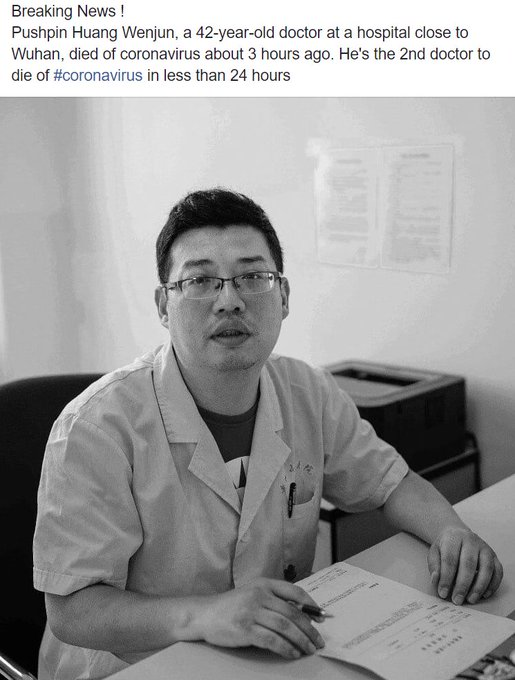 （编程随想注：照片中的黄文军医生，湖北省孝感市中心医院呼吸内科副主任，2月23日殉职）
200斤贵族猪：
我们省都开始抽调区县级医院还有骨科和儿科医生，可见人员吃紧。
SSSSAQWE：
厉害国的底裤被扒下来了。
就这样还号召复工，现在才二月，拐点也还不清楚在几月，就开始号召世界救援，说医疗物资奇缺了。
亲自指挥的那货呢？
支那疯蛆院深切治疗部李主任：
现在已经是第三幕了，不需要第二幕炮灰哭丧骗捐和眼泪了。
现在主子要看到的是一片急切需要召开庆功大会的厉害了你的国氛围。
Hsin Chih-Yu：
基本上，海外是不會有人理你們的。
台灣人心裡清楚，即便提供也會被某政黨吃掉，甚至掩蓋資源提供者。
最後演變成是共產黨提供給你們，你們也不會知道真相。
山野愚夫：
贵国刚刚往所罗门群岛捐了1000亿，往非洲找流氓学生600亿，以前支持俄罗斯4000亿，都是美元哦！
不找自己的国家和政府要，居然想全世界给你？猪医生！
◇其他一线医护人员
只配抬杠：
刚刚，孝感中心医院呼吸内科副主任黄文军医生去世，42岁。
前两天的江夏区第一人民医院医生彭银华，29岁。
武汉市协和江北医院医生夏思思，29岁，接连去世三位医生。
全是青壮年龄，有较好的治疗条件，本人有医疗配合意识。
医生死亡都如此密集，近日武汉湖北的死亡人数真的如官报一样在下降吗？
“医生劳累造成免疫力下降”，这个观点不会对估测总体死亡人数造成影响。
因为新冠肺炎病亡人群本就是免疫力弱的人群，比如高龄和基础疾病人群。
即使该观点成立，也并没有使医生在病亡人群中有特殊性
Kim Borges 金不日：
还有林正斌，武汉同济医院器官移植副主任医师。
从医30多年，在自己工作了一辈子的医院里死的。
主治医师是自己多年的老朋友，林正斌生命的最后一条信息是：“宋主任，我上呼吸机了，救救我！”
只配抬杠：
2月21日，武汉市红十字会医院发布公告：
“普外科医生肖俊在抗击疫情一线不幸感染新冠肺炎，于2020年2月8日18时13分在武汉市金银潭医院去世。
医院对肖俊医生的不幸去世表示沉痛哀悼，向其家属表示诚挚慰问。”
2月6日李文亮去世。
2月7日舆情爆炸。
2月8日隐瞒肖俊医生的去世消息。
（编程随想注：肖俊医生2月8日去世，21日才发公告）
武汉普通人：
武汉市第一医院的医生护士们已经要饿肚子了……要跟大家“讨口饭吃”，求捐助米面粮油蔬菜禽蛋肉，十斤八斤都行。
已经对武汉现实的情况无语了。
武汉普通人：
北京援助武汉的医疗队对外开始求助了。官方和民间他妈的永远没有活在一个维度。
我在微信群里已经严重提醒了我不在湖北省的朋友，不要出去浪。。。。
武汉普通人：
党国政府能不能主动干点人事，去世的思思医生，老公也是个医生，居然还要冲前线。
家里还有孩子的医生家庭，已经走了一个了，给孩子留个至亲吧！
建议这种家庭，定个制度不能再参与一线了。
对于大国的China，不缺一位医务人员。但是对于这类家庭的孩子，他们只有一个爸爸妈妈。
默默：
这是武汉的一位医生朋友刚刚发的朋友圈
黎明：
一名护士蹲在路边吃饭，不远处的丈夫和孩子正看着她。
湖北省十堰郧西护士江世娥，正月初二上班，怕传染给家人，一直不敢回家。
第25天，在护送一名病人的时候路过家楼下，老公穿着睡衣，带着儿子，拎着刚做好的饭菜把它送到路边说：
“儿子想你了，你把饭菜吃完，我们就在旁边看着你”。
黎明：
我把这张照片和这段文字发给了在上海一家医院呼吸科工作多年的医生朋友。
他说：“一线医护人员是不能接触家人的， 即使结束了也有两周的隔离期。”
并说，“最起码要保护好自己的家人。”
我想起了作家方方的话：时代中的一颗灰尘，落到每一个身上都是一座山。
★遇难患者众生相
◇导演常凯惨遭【灭门】之灾
【常凯导演遗言】
月光博客：
据财新网称，湖北电影制片厂员工常凯与武昌医院柳帆为姐弟关系，姐弟俩与父母4人于17天内接连去世，姐弟二人分随母姓和父姓。
1月25日，常凯父亲出现新冠肺炎感染症状，三天后常凯父亲离世。
2月2日，常凯母亲因新冠肺炎去世。
2月14日凌晨，常凯因新冠肺炎去世，当天下午，常凯姐姐也因新冠肺炎去世。
（编程随想注：以下是诸多 Twitter 用户对上述推文的回复）
Robin：
惨绝人寰，土共罪孽，罄竹难书
Gr@y W：
现在再看看宣传的 #有国才有家
是多么冷酷与可笑。
Makino ruki：
有家才有国……
国是由国民组成的，一个个国民不在了，国还有意义吗？
早期下瞒报命令的某人，应该自裁以谢国民，你觉得呢？
慢慢：
病死率如果是 2% 的话，他们一家四口同时去世的概率是 0.0000016%
石扉客：
我友老唐说，灭门之祸，常规是车祸空难等小概率事件。
这次武汉之疫已有多例，真是惨绝人寰。
我的感叹是，常凯老师本系名导，功成名就，阖家安居在大武汉，孩子也早送到国外，应属岁月静好的典型家庭，大疫之下灭门。
想象下我们这样家境条件可能还不如他的普通人，易地而处将会是何种凄惨光景？
◇杨元运——为了不连累家人而自杀
一只找父亲的杨：
一只找父亲的杨：
一只找父亲的杨：
《武汉封城一月祭，听听“尘埃们”的声音 @ VOA/美国之音》
（编程随想注：以下是此文的摘录，引文中的粗体是俺标注滴）
一个月前，杨晶晶和很多人一样，在朋友圈中转发了官方那句充满正能量的口号“武汉加油”；一个月后，这位28岁的武汉房地产销售员说，她的世界崩塌了。
两天前，警方通知她，有人在路边发现了她父亲的尸体。人已经去世几天了。
51岁的杨元运是武汉嘉华汽车塑料制品公司的员工，杨晶晶一家的顶梁柱。2月16日那天，他没有像往常一样给家人做饭。他没带手机也没带钱包，一声不响地离家出走了。
临走前，他在手机上给妻子写下最后的留言：“我走了，不能陪你到老了，无处可逃。”
他没有按下“发送”，这封留言至今还躺在他微信的草稿箱里。
那天，杨元运还在笔记本上写下了几行遗书：
“如果这次疫情和我开了一个玩笑，我坦然接受它的洗礼。如果我的病体有用，就献给这次疫情做医学研究。愿天下人不受病魔的折磨！”
“他一直瞒着我，不跟我说他的身体状况，也瞒着我妈，”2月20日，被隔离在武昌的杨晶晶通过电话对美国之音说。“我只想找到我爸爸。”
此时的杨晶晶还不知道父亲已经不在人间。
杨元运失踪几天后，母女二人才在他的手机上发现，一连几天，他通过微信联络社区人员，报告自己发烧、胸闷，哀求他们安排他就医。
但社区一直推诿说没有床位，态度也很冷漠。“我觉得你根本就是没有什么病，就是你想太多了，知道吧。” 汉南区纱帽街薇湖路社区一位工作人员回复他。
几天来，美国之音多次致电该社区，但电话无人接听。
“我妈从头到尾都不知道我爸在跟社区求助，”杨晶晶泣不成声。“我打电话去社区问责，他们说我是骚扰他们。他说，我们 100% 没有责任，你们作子女的干嘛去了？”
中国官方数字说，截至2月22日24时，全国累计报告确诊病例76936例，累计死亡病例2442例。倒在路边的杨元运不会被纳入这些数字。像他这样没有确诊，甚至连医院的门都进不去的非正常死亡者在中国大地上不知还有多少。
这场举国大疫中，很多人死了，却连一个数字都不是。
武汉作家方方在她广为流传的《封城日记》中写道：
“武汉现在是在灾难之中。灾难是什么？灾难不是让你戴上口罩，关你几天不让出门，或是进小区必须通行证。
灾难是医院的死亡证明单以前几个月用一本，现在几天就用完一本；灾难是火葬场的运尸车，以前一车只运一具尸体，且有棺材，现在是将尸体放进运尸袋，一车摞上几个，一并拖走；
灾难是你家不是一个人死，而是一家人在几天或半个月内，全部死光。”
这篇日记不出意料地被官方删除。
武汉封城一个月之时，美国之音联络了这座孤城中的普通人。在轰轰烈烈的大时代里，他们往往渺小如尘埃，我们希望记录“尘埃们”的声音。
......
Sook：
真的太难过了。掌权者从来都没有把人当人看过。
这种时候还要求删帖是真的没有丁点同情心。
优秀党员哈里发：
枕头又泪湿了，不敢再继续看下去
风携着心：
父爱如山
cosren：
一场人间惨剧，多少国仇家恨……
弗雷的马Freydom：
不能忍
難料如陰，動如雷霆：
共產黨存在的一天就無公道可討回，無可討回公道...
天高云淡：
这肯定不算武汉肺炎去世的
吐槽工程师：
移民最好的时候是十年前，第二好是现在。
你感受到父亲离你而去的痛苦，为了不让你的儿女再受这种折磨，真的要开始考虑移民了！
在国外，再苦再累，难道还能比这更惨吗？
◇其他遇难患者
李南飞（我可以说不吗）：
1. 李文亮医生，34岁，感染到去世，28天！
2. 红凌，生物学博士、教授，53岁，确诊到去世，13天！
3. 杨晓波，前黄石市市长，现长江财险董事长，57岁，确诊到去世3天！
4. 常凯，湖北电影导演，55岁，没超十二天。
5. 刘智明，武汉市武昌医院院长，51岁，有钱，有现成最好的医疗条件。26天！
★国难中的【公民记者、作家、媒体人】
◇方斌
《公民记者方斌视频号召国人“全民自救、反抗暴政”，昨遭中共当局破门抓捕 @ 维权网》
美猴王：
方斌冒着被感染病毒的生命危险，进入医院抢救室，拍病人，数尸体，将真相呈现在全世界面前。
他拼着被捕判刑把牢底坐穿的勇气在油管发布视频，大声疾呼“全民抗争，还政于民！”
方斌正值壮年，有车有楼，温饱无忧。
他为了推进中国民主化运动而被捕，现在轮到我们为他做点力所能及的事了。
凡有良知的人都不能忘了他！
华涌：
方斌被抓的消息被几个渠道确实，今天中午警察和便衣与方斌僵持很久，最后消防人员破门而入，方斌被抓捕！
中途还防备方斌跳楼，最后在下午三点方斌被抓。
寻找方斌！声援方斌！
◇陈秋实
《陈秋实：一个不想当记者的演说家不是好律师 @ 德国之声》
Hu Jia 胡佳：
北京公民记者陈秋实被捕前最后一次报道。
恳请更多国际媒体关注被以“强制隔离”名义强制失踪的陈秋实。
#ChenQiushi #ChinaCoronaVirus #WuhanCoronavirus @chenqiushi404 @Xuxiaodong3
禁闻网：
网上呼声：不要让陈秋实变成第二个李文亮
#中国 #中国人 #公民记者 #李文亮 #武汉 #武汉疫情 #疫情 #真相 #陈秋实
Maze Mazy (麻吉妹子)：
恕我直接，人民日报之流皆不如陈秋实的一坨屎；央视之辈全不如李泽华一根吊毛。
◇李泽华
华涌：
刚刚李泽华被带走，请朋友们关注！
一个95后的小伙子，传媒大学毕业，CCTV7节目主持人。辞职后做自媒体“不服TV”。
近日入武汉关注武汉疫情，并在YouTube发送视频。
2020年2月26日晚10点多在武汉一民居被带走。
华涌：
95后公民记者李泽华在被抓前，隔着门对国保慷慨陈词的讲话：
“鲁迅说：咱们中国自古以来，就有为民请命的人，就有拼命硬干的人，就有舍身求法的人，这才是中国的脊梁。我不愿吞炭为哑，我也不愿意闭目塞听。”
请朋友们为这位帅气、勇敢、正义的小伙子发声、声援、抗争！言论自由无罪！共产党放人！
小婷：
李泽华武汉遭国安追捕
#李泽华 他表示，自己来武汉的所为符合宪法，无愧于父母无愧于传媒大学，无愧于这个国家并表示自古以来就有为民请命的人。
他之所以从央视辞职，为的就是中国有更多年轻人站出来，但他知道理想主义在那个春夏之交已经死了。
之后他主动开门，信号消失。
◇方方的《武汉封城日记》
方方：
我们都还被关在家里，足不能出户。而另有一些人却已在大唱颂歌，连胜利的书都看到了封面（如果不是恶搞的话）。
武汉人有什么话可说？焦躁也好，烦乱也好，我们都得忍下来，是不是？
胜利也是你们的胜利。
方方：
这几天，死亡者似乎离自己越来越近。
邻居的表妹死了。熟人的弟弟死了。朋友爹妈和老婆都死了，然后他自己也死了。
人们哭都哭不过来。
方方：
特别想说一句放在心里很久的话：中国那些极左分子，基本上是祸国殃民式的存在。
他们太想回到文革，太仇视改革开放。
一切与他们观点不同的人，都是他们的敌人……
用那种“洒向人间都是恨”的粗暴语言，甚至更为卑劣的手段，低级到不可思议。
我特别不明白：从来没有人会删掉他们的帖子！
方方：
媒体人也可怜，可谓两头受气。上面不要他们讲真话，下面要求他们讲真话。
他们经常无从选择。更多的时候，他们只能选择听上面的。
既然如此，当下面的人骂他们时，他们大概也只能承担。
石扉客：
前湖北作协主席方方的系列封城日记博客，先是发在新浪微博，后发在自己博客，相继被删除，现在只有财新博客还在勉力维持。
这个系列是目前我看到的向外界传达疫区民众声音的最好平台，感性理性兼具，宏观微观皆有，真诚悲悯，如歌如泣，因而也成为五毛撕咬的主要目标。
Lucy：
2月2日，方方讲述武汉悲惨故事时，提到她以前说的：时代的一粒灰，落在个人头上，都是一座山。而我们偏偏处在一个尘土飞扬的时代。
2月4日，方方直言此次大疫教训极为沉痛：必须一层一层追究，一个也不放过。否则对不起那一个个死者。
2月7日：比病毒更让人无奈的是不让人说话，但是我的记录还得继续。
高伐林：
自称“主业是读金庸”的六神磊磊，针对有人批评方方“唉呀我心情已经好沉重了，你们怎么不写点让我开心的”说：
我们是成年人，成年人不要对世界撒娇。长大是自己的事情。
不能要求每个人都当赤子，但是你可以不做巨婴吧。
要当鸵鸟，哪里找不到沙子把脑袋埋起来？
你已供养了大量传媒和作者告诉你世界温暖了
王局志安：
方方不是记者，不可能去核实每一个信息的真伪。
她的价值在于，她作为武汉城中的一份子，记录下了自己的见闻和感受。
微博上还有位叫阑夕的，也在坚持写封城日记。
他们共同为武汉这座城市遭受的苦难，留下一个相对系统的个体记叙样本。
反过来说，如果这么大的灾难都没人记录，那就太悲哀了。
chengaiguo：
（Replying to 王局志安）
王局健忘啊，2003年安徽作家陳桂棣和吳春桃夫妻的报告文学《中国农民调查》，县委书记张西德还起诉了他们夫妻
（编程随想注：俺的网盘上分享了《中国农民调查》的电子版）
Lisa：
可惜的是，这些“民间”记录在灾难过后存活下来的可能性极低，更别说流传了。
墙内必然一片歌功颂德 岁月静好...
◇疫情之下的媒体人
Murong Xuecun慕容雪村：
环球人日之类，中国境內称“新闻媒体”，更准确的应该叫宣传机器。
它们会不会报道一些事实？当然会。
但正直的人应当了解，它报道这些事实，也只是政治宣传的一部分，就像药物的副作用，不能当成主要疗效。
如果说过去的中国报紙还有一点新聞理想，在『央视姓党』的当下，仅剩的那点理想也已荡然无存。
编程随想注：
用【客观事实】进行洗脑，是有很多技巧滴。俺曾经写过一篇
《比“欺骗”更狡猾的洗脑——基于【真实数据】进行忽悠》
以下是诸多 Twitter 用户对上述推文的回复。
Orchid：
完全同意。所谓的一些客观报道，就像是毒药外面的糖衣，还是有点营养成分的。
西野芳菲：
报道的事实都经过挑选。不得不报的事实经过“加工”。一直如此，一贯如此。
Alfred Bowie：
他们也会报道一些事实，例如：老张家的母猪生了4个猪娃、老王家的母鸡开始下蛋了。
ganugsz：
某种意义上，就像二战前西方国家对德国的纵容和误判一样，现在西方世界也应为现在的局面承担后果。
他们不是不了解共产党的历史和基因，他们只是被短期利益蒙蔽了双眼。
石扉客：
这段时间，新华社和光明网先后吆喝“让人讲真话”，说明自数据黑洞让官方自己也大为头疼之后，上面确实有让宣传口出来多少平衡一下的意向。
但连这些吆喝都被迅即删掉，连李医生去世都快三七了还背着训诫的处罚，你让人们怎能不将信将疑甚至冷嘲热讽？
为政在于诚，民无信不立，你越口是心非，朝野之间就越渐行渐远！
荣剑：
新华社和光明日报今天不约而同地刊发了鼓励讲真话的文章。
但颇具讽刺意味的是，新华社的文章已经被删，光明日报的文章能存多久尚未可知。
新华社和光明日报都是在中宣部领导下的官方媒体，掌握主旋律和政治正确，它们的真话都说不出来，那就更别提草民说真话。
究竟是哪个部门害怕讲真话或不让人讲真话？
文涛：
眼见着越来越多的记者编辑转行，我所在的好些个前同事前同行群，基本成了公关公司的员工俱乐部。
所谓的新闻理想，在各种禁令和打压下，早已支离破碎。
追求新闻自由？必然会失去人身自由，勇士不多，英雄就更少。
★疫情【次生灾害】的遇难者＆受害者
◇六岁小孩，在家陪着死去多日的爷爷
Hong Hong：
網友爆今天最揪心的一個故事：
2月24日上午48廠一小區志願者上門查體溫，
一小男孩開門，問家裡幾人？
男孩答：他跟他爺爺。
志願者問他爺爺呢？男孩說，已經死幾天了。
男孩四五歲左右，後志願者報警，警察，醫院全去了。
問男孩為什麼不出去，回答：爺爺說外面有病毒，不能出去，在家吃了幾天餅乾了
Michael Anti：
这事太惨了。希望疫情过去后，国人还能记得这是湖北之难、国殇，克制不要在任何情况下喜洋洋地歌颂，
尽快把这次没发挥作用的疫情灾情警报系统修补好。
（编程随想注：以下是诸多 Twitter 用户对上述推文的回复）
zhang3
这消息昨天在微博被完全删光，在推特一两千转发。
可当时无论用哪个关键词在微博搜，都最多只能搜出一两个，而且转发评论点赞均为零。
Duke of Heidelberg：
剛聽到還存疑，覺得太離奇了點。
沒想到，真沒想到居然是真的，多乖的孩子，真是可憐。
WinterHea：
天呐这也太难过了
isky：
其实此次肺炎疫情防控管理极其失败，非肺炎患者的死亡数估计都要高过肺炎死亡人数！
Riftvalley：
根本不用疫情过去，现在已经有无数人得意洋洋进行歌颂了。光昨天一天就看到不止十个宣称【中国应对疫情最棒】
被隔离饿死的、被限制外出不能获得医疗支持的、有家不能回不得不露宿街头的，在他们眼中全都是【为了控制疫情不得不付出的代价】
带毒的格子猫：
祭奠灾难和高唱赞歌的本来就不是同一群人，还有一群人云亦云的中间者在当传声筒，这两个月只是话筒递过来又递回去而已。
大量的民众已经没有基本人权的概念，只懂得复读民族主义的宏大叙事
Alex：
不是人命健忘，是它们不敢展露真相，刻意隐瞒，打压真相，人间惨剧
GaryHo：
这次疫情和警报系统无关，警报系统运作很正常。
Wei Wang：
这次整个系统中出问题最关键的零件儿，就是曾经十里山路不换肩、现在打算一辈子不换岗的那位！
要保障系统正常运行，关键部件一定要过关。
否则一切都是白瞎！
钱正：
当初压制疫情，并不是为了破坏人民群众春节的气氛，而是为了不破坏习近平南巡贵州的气氛……
一个国家数以万计的生命，竟还不如一个领导人的出访气氛重要，每每想到此，我都想宰了他…
皇甫平：
成都三岁的李思怡
武汉脑瘫鄢成
这小男孩差点成为另一个
多勒个多Ts：
◇刘德成——受疫情影响而绝望自杀的云南养蜂人
老司机：
疫情阻碍运输 蜜蜂活活饿死 养蜂人上吊自杀
生在中国，活下来全靠运气
养蜂人刘德成死了。在他的蜜蜂因中毒、转场受阻大量死亡之后，于2月13日在云南上吊自杀。
他的死将蜂农这一群体带入大众的视线，也让人们知道新冠肺炎疫情影响的还有这么一个行业，这样一群人。
野山：
大批养蜂人困在云南境内，花期已过，蜜蜂农药中毒，没钱买饲料饲喂，
眼看着四川油菜流蜜却无法转地，蜂农结束了年轻的生命，为之惋惜
武汉普通人：
痛心，养蜂人在云南转不了场、蜂中毒，想不开了上吊自杀。
这个影响力是真的防不胜防啊。。。。。。。。。。。。
◇生活所迫，亲生骨肉送福利院
劉貽牧師：
看这些报道，心会滴血。
（编程随想注：以下是诸多 Twitter 用户对上述推文的回复）
勿忘六四 Never Forget June 4：
心痛……
政府不负责任，民众始终生活在水深火热之中，在灾难来临时更是如此……
鲁迅其实是个愤青：
政府该干的事一件没干！
为了后辈自由，一起努力：
哎！看着很难受！
世界第二经济体，天天这个第一那个第一，最基本的保障都没有，厉害了我的锅
霜天红叶换春回：
给所罗门群岛的1000亿美元。准备好了
Fiona Ko：
誰能相信這是發生在全球第二大經濟體國。
天滅中共人人有責。
阿麒：
进入小康社会的中国人居然养不起孩子！
索多玛爱国者：
索多玛小康社会
S^_^Z：
一直以为这事只有古代才有，五毛狗怎么看
Jupiter(f)：
不知道这场灾难过后，会有多少孤儿
PASIMO TOMING SHITAO：
心会不会痛？！
那是自己的孩子啊！一份生命，一个信仰一个期待啊！怎么能狠下心！
xingxing：
可怜的孩子，你被生错了地方
没裤子的刀客：
不知道这些父母怎么想的。
如果孩子可以选择自己的出生，估计中国会有很多人没有孩子。
津津乐道(Truth Seeker)：
可怜的宝宝，要是在美国，有的是人抢着要杨！
Miller：
送到福利院，反手被8万美金卖到美国。。。
XinlongZhai：
可怕的是已经沦落到如此地步却仍然相信着这个政府，更可怕的是我很清楚这个国家大部分人也是同样的想法。
孩子无辜。
◇鄢成——饿死于家中的17岁脑瘫儿
财经冷眼：
家人因武汉肺炎被隔离，湖北17岁脑瘫儿独自在家6天后死亡。
屎尿中活活餓死，人間慘劇啊
https://youtu.be/-GTlbE-x8cg
johnzt：
居委会就是杀人凶手，没有尽到监管责任！
或者故意杀人，重度残废脑瘫是居委会累赘，故意不管，饿死他！
磐石Lucy：
不可能吧？政府办事员不是这么没人性吧？
Red Fire Age：
老弱病残都死了，不就加速胜利进入小糠大糠社会了吗？
andelie：
這一切的罪魁禍首是誰？
Tarnowitz：
共党是在造孽啊 共党不倒灾难不止
正常人類來了：
翠君去死。老逼養的雜種！
hale：
人间地狱 这场灾难的制造者永生永世都会在地狱受尽折磨！！！
Sophia.Mich 栖凤殿主：
不会再有现在的中国了
不想被認識的知道這是我的推：
天吶⋯⋯來世不為中國人
Gru的小胶囊：
这几天那些个五毛狗呢，看到这个怎么不出来蹦达了，怎么不为你的主子喊冤了，是哑了还是装聋作哑了
◇上网求助者的初一学生
巴丢草 Badiucao：
帮帮他就是帮帮自己
他们不是病毒，他们只是想活，和你一样！
（编程随想注：以下是诸多 Twitter 用户对上述推文的回复）
别问我特么是谁：
每次看到这种信息，就想草他大爷的共产主义
セキシユンー：
想了想只能尝试联系美国人或者日中友好医院的人求到神药瑞德西韦试一下。
重症求到病床也没什么用，神药说不定还能救一下。
★封城引发的【食品危机】
stupidwz：
从湖北官媒和粮储官员宣称储粮够消费一年，再到从黑龙江急调3000吨大米，仅用两周时间。
中国自古瘟疫过后往往伴随大饥荒。
中国是世界最大的粮食进口国。2020年中国粮产量应为5.54亿吨，而实际需求7亿吨，缺口近2亿吨。
粮食自给率不足80%。当粮食自给率不足90%，社会可能不安；如不足70%，可能引发动乱。
反共段子手：
湖北人也太能吃了吧，5天吃掉半年的粮食。
记者李满：
湖北难民高飞19878794300：
（Replying to 记者李满）
记者没有说破，但这个危机早就发生了。
是的，就是粮食危机，比经济危机更严重。
我之前也批判政府不让农民摘菜种菜，禁止恢复农作业，却一定要硬着头皮搞复工，是愚蠢不可及的
花醬不思蜀：
現在的真實武漢
極度深思：
一段来自疫区的语音：
“同志们，我刚刚在楼下看到我们九栋的一个老爹，黄冈的，没买到菜，摘树叶子吃，我现在都想哭了……”
一个民族
所遭受的苦难
都是这个民族的民众
自己选择的结果
独行侠：
今天，有人確認湖北農村已經生活用品告罄；
在大部份地區，米五天買一次，還貴。
女性必須的衛生棉已經斷貨一個星期，現在最少數十萬年輕女性沒有衛生棉。
習近平不到一個月就把中國中部最富裕的省，打到非洲草原生活水平。
坦克手贝吉塔：
刚刚接到社区小区派出所的联合通知，停止一切居民自行组织的团购，停止骑手外卖以及代买，禁止供货商在小区门口配货联系居民自取。
全部居民只能购买指定单位的商品。
疫情数据一天比一天好看，隔离措施一天比一天严格，买草纸搭卫生巾的套餐看来要推广了。
meilong：
家里没有水，什么吃的都没有了。这是一个确诊患了冠状病毒的病人在社区群的哭诉。
她老公儿子在确诊以后被强行拉走去隔离，她在家里弹尽粮绝。
像她这样的病人，在这次疫情当中，武汉不知道还有多少。也许最后还没病死，就已经饿死了。
你今天所受的全部苦难，都来源于你曾经的所有赞美。
变态辣椒RebelPepper：
不止是武漢，周邊城市也很危險了，弹盡粮绝，要死人的
变态辣椒RebelPepper：
武漢饑荒已經來臨，這還是能上網呼救的，都餓成這樣了，還有多少不能上網的人呢？
变态辣椒RebelPepper：
我们现在听很多人大谈“战时状态”，但随便一个行政官员就能够宣布“战时状态”吗？
这必须是要经过最高立法机构决定的。
封城或者诸如此类的极端措施带来的伤害，一定会比病毒本身还要大。
方舟子：
这是全国性人道主义危机。
只管收治新冠肺炎患者，不管收治其他疾病患者，因别的病死了白死，没人统计。
方舟子：
湖北天门，家家户户封门20天，没人送饭菜，要自己准备好20天吃喝。
敢提前出来的拘留10天。
这是人间？
Leon：
说白了，就算封城也至少是信息舆论和媒体自由体制下进行。
tg的封城就是让你们再家等死。居然1千万人会会老老实实呆着等死。
所以说韭菜永远不会明白，香港人为了一部恶法舍命抗争的想法。
这就是甘愿做猪和只想做人的区别。
大耳朵猫妹：
某人写的武汉封城的买菜
“超市可选择的食物蔬菜极少，而且每次要排好几个小时队。有时候很搞笑，超市员工把货架摆满货物之后，不是马上开放售卖，而是先要等一帮人忙乎拍照或摄像，等忙完这些之后顾客才被允许进入，一哄而上。”
这个拍照就是为了给官媒搞出供应充足的假象吧？
现在已经不让出门买菜了
大王朱利安：
精品排骨60一斤不贵，四斤240合理
&
我就想买一斤便宜点的边角余料回去随便炒个菜
前者是微博上盛世强民的世界观
后者是许多人真实可见的生活方式
所以强小将说“不贵！”
居民们在群里气得捶胸顿足。
兩宋遺風：
私人不准購物，只能單位購物，且需單位證明。
私自購物的顧客和老闆，都被傳喚至警局。
警察窮凶極惡，差點準備上銬。
武漢人已經完全任人宰割，連個人買些東西的自由都沒有了。
◇湖北随州妇女——为外出买肉，徒手攀爬10层楼
新闻大吐槽：
大门被堵，为了出去买点肉，女人化身蜘蛛侠，从10楼爬下，后被居委会抓到。
真是被蠢政逼到绝境的可怜人
Dr. Fieldbrook：
墙内说该女子有精神病史
方舟子：
（Replying to Dr. Fieldbrook）
爬楼女侠回来的时候手里拿着肉呢，这还不算买肉的“现实依据”，难道是偷来的肉？
把敢反抗的人都说成是精神病，就平安无事了，对吧？
方舟子：
2月6日湖北随州发生的事，不管是因为什么原因要爬楼，用脚后跟想想也知道与把人关在家里有没有关系。
那些跑来“辟谣”的，用脚后跟想想也知道是御用水军。
Song Ma：
对了，还有因为楼道封锁，不得不从10楼阳台徒手爬下楼，去买一点物资的柔弱妇人。
凡人皆有畏惧之心，谁都知道那个高度一个失手就能摔死，但没吃的也要饿死啊！
凡能够坐在家中解决问题，何必冒死徒手攀爬10层楼？
有关管理者不思改正，不在这个妇人面前脸红道歉，还有脸去处罚？
滑天下之大稽。
◇新疆的农民——连家门都出不去
大耳朵猫妹：
新疆那个喊要饿死的视频背后，是好多类似这样的情况。
（编程随想注：以下是诸多 Twitter 用户对上述推文的回复）
王星辰：
一刀切是表象，实质是管理者与住户利益不一致，同时住户没有任何办法反制管理者。
甚至都不能说管理者的逻辑是“怎么省事怎么做”，他们是“怎样损失最小怎么做”。
换句话说，死人没事，别是因为肺炎死的就行。
面对这种困境，没有人权与言论自由，普通人一点办法都没有。
Mr.Shore：
集中营却没做完的事，现在接着做
ppaadd：
怎么能没有仇恨
笑笑：
亲自部署的嘛，你觉得梁家河思想里会有人性的部分吗？
★封闭小区之后——先私吞捐赠的食品，再高价倒卖
Ray Lau：
大家来看，这就是捐的菜的下落之一
（编程随想注：以下是诸多 Twitter 用户对上述推文的回复）
yuan：
四川给我们社区捐了一车蔬菜，社区都没跟百姓讲这个事，说菜给老弱病残了，谁知道，估计给了几家。
然后拍完照，就把剩下的分了，跟百姓没有太多关系。
hgspsd：
吃这几百斤的菜一定会噎死
Ray Lau：
私吞几百斤明显不是为了活命！而是为了赚钱
Rei Ayanami：
我朋友家里昨天就发了一根白萝卜，真的就一根萝卜，
还要下去拿。
随遇而安：
捐出的口罩之类的直接都进了战略储备，一分钱不花就建立了。司令偷着乐死。
真不明白，看奴隶受苦，你们给奴隶主捐东西干嘛？那奴隶主不越发让奴隶受苦吗。
说你蠢，头一回没明白，这近二十年都多少回了，也都是些在原地折腾不停歇的主。
只要有个奴隶主奴役了你们，你们一样的万劫不复。
Milescanton：
常态，很符合中国人的德性，不奇怪
Imprisoned soul：
见怪不怪了。
几千年的中国文化，从来没有变过
Lucy：
武漢被滅不是沒有道理
我真的不會太可憐這些人了，真的該滅了
滅了重新有好人代替這些雜碎
夷长：
官萱造假翻车记
（编程随想注：以下是诸多 Twitter 用户对上述推文的回复）
How to save China：
官宣新闻为什么叫官宣，因为这个新闻就是专门统一口径做给墙内人看得，至于官宣内容得真实性与否就全凭良心了。
举个例子，人民日报墙内版报导双黄连有潜在抗击武汉病毒的作用，人民日报墙外版客观公正地表示那个叫“潜在”作用，即未必有作用。
EJ：
墙内都车祸了啊，真是喜大普奔
草泥馬：
湖北日報沒有調動水軍控評的權利。
如果這是人民日報，大概率不會出現這些評論，消息一發出，水軍就會佔領評論制高點
Tsilien：
我看这样下去武汉距离封网不远了
Andy：
我也出来辟谣，我今天买了50元的团购菜，几根黄瓜，几个烂青椒，两个土豆，蘑菇是烂的，猪都不吃。
至于价格，我只能说，以后不买菜了
T_ina 鱼：
方舟子：
武汉禁止居民外出买菜，只能定购高价送菜。
大妈说：“武汉的菜谁吃得起啊？谁在趁疫情发财？”
不仅定价高，而且明显缺斤少两得厉害。
kim：
我们小区（武汉）从小处着眼主要是有几位热心业主在帮忙团购菜等生活用品，也有邻居以社区网格员的身份从单位（学校）到小区里张罗。
物资没有问题，但是团购过程中能看到人性自私的一面。
志愿者也好像分了好几个梯队各自为战，很像建党初期的留苏派，留欧派以及毛派。
这个病教人看到了不少。
于溟：
#中共國 湖北荊州
捐助的蔬菜不发給需要的市民，全部被社区囤起來。市民想买都买不着，而他们社区人员們先挑好的拿走！
评：这是什么世道，一场瘟疫，所有人都原形毕露！
$0ńñø /\/\¡@〇：
★挺身而出的热心人，下场如何？
◇热心的建筑工人，返乡后的遭遇
《火神山医院完工之后，一位建设工人的返乡纪实 @ 财新网博客》
（编程随想注：以下是此文的摘录，粗体是俺标注滴）
......
1月28日，他在县城电视台偶然看到“火神山招工”的消息，因为自己以前在工地干过建筑通风，正好也缺该工种，他当即就决定去火神山建筑工地支援建设。带着另外三个老乡志愿者，他开着车就从家乡出发了，一路疾驰，十几个小时后抵达武汉。到火神山建筑工地安顿完毕后，开工前他才告诉家人自己的决定，母亲一开始并不能理解他的选择。据张元说，他现在有自己的生意，年收入也还算可观，小儿子才五岁，成为“逆行者”可能对家人来说一下子有点难以接受。在工地上，他每天从早上7点开始干活，往往都到凌晨才停下，因为担心自己不一定能够再度回到家里，他会在极少的休息时间里挤出空隙拍摄一些视频记录自己所做的事情。“如果有意外最起码还能给我儿子女儿看看吧，最起码他们能知道我去哪儿了干什么了”，张元说。
所幸，火神山医院顺利建成，目前为止，张元和同伴也都身体健康，离开武汉返回家中。但与他想象中人们的欢迎、关心和感谢不同，现实情况使他感到心凉。
“我们一下高速就向县里报备了情况，并询问隔离的地方，一路上工作人员不让我们下车，通过电话与我们进行沟通，一路都不告诉我们去何处隔离，后来我才知道，要把我们带去和确诊患者的密切接触者关在一起。”张元说。
那已经是晚上十一点，而县里这样的安排他并不能接受，可是自己当时一点办法都没有，无法联系上相关领导。沟通失败后，他与另外三个工人又回到车里，决定驱车离开，等待天亮后联系相关负责人员。保安拦截不成后选择报警，警察希望通过强制手段让他们接受隔离安排，但由于他当时情绪激动，且持有武汉开具的通行文件，最终双方陷入僵持状态。
张元担心自己会因为不合理的隔离而加大感染新冠肺炎的风险，按他的话说，我在外面打仗没有被敌人打死，回到家也不应该得到这种待遇。他认为隔离是必要的，也理解工作人员对自己的恐惧，他提出可以在自己闲置的房子内隔离，又或者给他搭个帐篷，哪怕在地里，在郊外，他都可以接受，但是不要把他跟确诊病例的亲密接触者关在一起。但都没有得到明确回复。
......
他为家乡人民的不理解感到难过，老家所在的农村村民听说自己去武汉支援了，就说“别让他回来”。而在隔离期间，当天真烂漫的女儿问自己，“爸爸你为什么不回家，你去那里干活为什么别人的爸爸不去啊”的时候，他一时之间也不知道该回答什么。
（应受访者要求，张元为化名）
◇义务送药人的遭遇
《武汉送药人——义务送药被举报“赚差价”，配合调查期间，奶奶脑出血昏迷入院 @ 腾讯网》
武汉普通人：
武汉送药人，义务送药被人举报“赚差价”，配合调查期间奶奶脑出血昏迷入院。
评论区都是网友说实名为他担保。
哎。。。。。。社会呀，社会呀。
（编程随想注：以下是诸多 Twitter 用户对上述推文的回复）
James Wu：
举报的那个，能全族死吗？
白山黑水😷：
挡着某些人的发财路了
Poohwan：
藥神 這些貨是白看了
所以在大中國做好人是要付出極大代價的
追求自由国度：
如果是民間送藥？那麼肯定是“紅色民意”舉報，海外郭騙子幫也是在做類似的事
它們要管控一切，就不會允許其他百姓做，所以用下三濫手段舉報、抹黑等等手法都會用上。
這類事情要影響到現實？就得邪惡思想的“手腳”來做！
★疫情暴露【人性阴暗面】
◇以“防疫”的名义作恶
Murong Xuecun慕容雪村：
无论是饭桌闲谈，还是公开发表文章，我都不喜欢引用那些道听途说的消息、难以查证的事实。
如果一个人的文章中頻頻出现这些东西，我就会有几分鄙薄之意。
但在此刻的中国，我們也需要明白，那些在微信群中流传的瘟疫狀況、抓捕封堵信息，是对不自由的生活的救济。
即使它是假的，也比只有一种声音好。
方舟子：
湖北孝感政府强制所有城镇居民必须足不出户，违者处10日以下拘留。
这下连采购、放风的时间都没有了，连犯人都不如。
这比封城厉害多了，人类历史上前所未有的壮举，除了厉害国，还有哪个国家干得出来？哦，还有朝鲜。
下一步就该把居民都饿死，死了就没新冠肺炎，其他原因死亡不必统计，不影响政绩。
方舟子：
老人在自家楼下晒太阳，被抓去关15天。
方舟子：
湖北咸宁街头，特警见人就查，没有通行证的就抓走。
这阵势像是敌占区查良民证。
方舟子：
五十年前的红卫兵小将复活了。
方舟子：
湖北咸宁的社区书记说，要求夫妻分床睡只是建议，不强制。
通知里说的是“家人之间必须隔离”，还不叫“强制”？只是没法真的强制而已。
胡总编说，要求夫妻分床睡，说明防疫战争打得艰苦卓绝，付出了重大代价。
不知书记本人带头分床睡了没有？不知胡总编当年萨斯期间在北京付出这样的代价了没有？
Jian Alan Huang：
藏族僧侣自焚抗议我没有祈翠，
维族人押往集中营我没有祈翠，
法轮功学员被活摘我没有祈翠，
港人要求民主普选我没有祈翠，
上访者律师被绑架我没有祈翠，
儿童失学老人露宿我没有祈翠，
地沟油毒奶粉假疫苗我都没有祈翠，
最后当我没戴口罩被铐走，已经没人为我祈翠了。
（编程随想注：稍微解释一下——【翠】是墙外讽刺习包子的流行语，影射“习卒”）
◇某日籍华人——（疫情初期）从日本倒卖口罩发【国难财】
Maze Mazy (麻吉妹子)：
日籍华人女，靠医疗行业身份，以救助武汉为由，向日本多家医院骗取口罩，转手高价倒卖朋友圈。
一顿骚操作，两头国难财，血赚2000万日元！事后嚣张到在朋友圈炫富。
真的很受不了这些搞“赴日医疗”的人渣。平时利用日本福利漏洞，把大批中国人送到日本来看病，赚取中介费。搞得日本民间对华人怨声载道。
Maze Mazy (麻吉妹子)：
居然还是成都人。京都在住？
日本国籍都被他们污染了。
我说怎么药店一夜之间被抢空了，amazon上口罩涨了十倍，消毒酒精涨了七八倍！都是这帮垃圾在抢货囤炒呢！
事实证明日本人民的爱心，不但能喂狗。还可以卖钱。
Maze Mazy (麻吉妹子)：
后续简直吃瓜了
声名狼藉被人肉之后，靠倒卖口罩的新晋壕大姐，找来关西华文时报的总编丛中笑吃了一顿晚餐。
丛中笑不但帮忙写了洗白文，还亲自上阵，发洗白视频。视频中他自称“誓死捍卫每一个人说话的权利。”
结果这个丛中笑被扒出2007年，借采访之便，偷摸女生下体痴汉行径被日本警方逮捕的黑历史。
Maze Mazy (麻吉妹子)：
最近我们全公司上下都在抱怨买不到口罩，副总还开玩笑问我知不知道哪里能买到口罩？
我就脸上发烫，因为我是公司里唯一一个中国人。
关系很好的邻居老奶奶跟我诉苦，花粉症犯了买不到口罩，我心里别提多难受。
你们懂那种明明没有做错事，却因同胞的无耻，而心虚心痛的心情吗？
◇邓晞——在香港传播病毒的武汉女高管
亚洲金融：
清华毒王，#邓晞，37岁，海通国际董事总经理。
邓晞隐瞒父母病情，入住香港多家酒店，最终确诊被斥为“行走播毒”，令人气愤！
邓晞坐拥半亿豪宅，接患上 #武汉肺炎 的父母，从武汉逃难到香港。
不住家里，在三个香港酒店之间逃窜。
邓晞肯定被评为年度毒王，
#清华 本科，哈佛硕士，还是生物信息专业。
华人新闻：
这位37岁的 #海通国际 女高管，22号将父母从武汉接到香港。
在明知父母患 #武汉肺炎 并发烧后，不仅没将父母送医检查，反而安排入住酒店，频繁更换酒店。
直到28日入院确诊，两位老人已辗转了3家酒店。
她叫 #邓晞，哈佛大学生物统计硕士学位，海通国际的投资部董事总经理。
邓晞算是犯罪了吧？
Nicole：
邓的父母是武汉武钢集团的高层，因贪污5000万元判刑15年。
可2020年刚三年就出现在香港街头，说是保外就医。
所以染了武汉肺炎不敢在香港就医，这下全给曝光了
白山黑水😷：
她爸爸是原武汉钢铁集团的董事长，被判刑15年，去年保外就医。
用别人的身份证申请来香港，所以不敢去医院，要不断换酒店。
MichaelHe：
原来以为是中国人素质低所以在国际上会被歧视，
现在才知道是共产党这些垃圾四处破坏规则，有传染病为了不暴露身份不惜传染别人。
正是这些人素质最低，全世界丢中国人的脸
◇被妖魔化的武汉人
纽约时报中文网：
有人在出示身份证后被酒店拒绝。有人被惊恐的当地村民驱逐。还有人在向当局登记后，发现自己的个人信息被泄露到网上。
这些遭驱逐的人来自疫情中心武汉。这些人成了中国的“贱民”，数百万人无家可归，被认为是神秘冠状病毒的潜在携带者。
《驱逐、围堵、举报——数百万武汉人经历了什么？》
vincent gao：
这是刚看到的微信截图，武汉人成了过街老鼠，一切只是刚刚开始。
野蛮的牲人族，不经历更加惨痛和血腥的教训，永远不能进化为正常的现代人类。
★【监狱】出现大范围传染
变态辣椒RebelPepper：
濟寧官方闢謠，説“解散所有微信群”是謠言。
但是看評論發現，當地大部分微信群都被勒令解散了。
造謠式闢謠大概是你黨的執政特色。
我覺得解散微信群是僅次於斷網的新舉措，保持韭菜們的散沙狀態對維穩很重要。
濟寧大概發生了什麼大事件？
秦鹏：
（Replying to 变态辣椒RebelPepper）
官方一辟谣，就基本上坐实了
向莉：
【突发！被掩盖的疫情之一：济宁监狱 疫情大爆发，目前被消音！】
济宁监狱因一狱卒的儿子从新冠肺炎疫区回来，未报，传染狱卒。
狱卒传染了整个监狱，济宁监狱方及上面下令解散 相关单位所有微信群。
谁说监狱安全？一个感染，之后团灭。做不到单一隔离，还不能去住院！
大王朱利安
@evilinside44
感染监狱为啥要解散工作群。。。。。。
（编程随想注：以下是诸多 Twitter 用户对上述推文的回复）
海嵎猫😷：
监狱管理很麻烦，这事非同小可。肯定是先捂着，领导的思维。
veritasintokyo：
当年“千人计划”被定义为知识产权盗窃的时候，系统内是要求删除所有含“千人计划”四个字的文件和报道。
Little Fox：
解决所有问题的首要方法是堵住嘴
好猫：
這是我黨一貫的勝利法寶：頭痛醫腳😌😌
风吹鸡蛋壳：
真的永远无法理解中国这些领导的脑回路。。。
Sue yee：
领导的脑回路一般人是理解不了的
There4Iam：
監獄集中爆發，就證明養老院、孤兒院、精神病院等等類似的人口高密度機構都有可能發生這種群聚性爆發。
精神病院已經發生過一起，養老院看到微博上在有人求助（自己舅婆高度疑似已經離世，那家養老院還有200+老人）。
孤兒院的情況就更難掌握，孩子很難碰到網絡，老師若不求助，基本就等於一座孤島
Jian Alan Huang：
难怪最近推上五毛少了很多，原来各地监狱疫情大爆发了。
★【养老院】出现大范围传染
花溪（花婆娑）🇨🇦HK✊（来自大陆）：
昨天，武汉江岸区一个社区医院养老院120个老人全部感染
看来，领导下令要建的19个方舱医院，不是建着玩的
（编程随想注：以下是诸多 Twitter 用户对上述推文的回复）
kazuma999：
共匪想怎么治就怎么治，又能减少养老金发放，又能减轻负担，共匪一举多得
踏雪寻梅：
给政府省下了养老金，让大中国直接到小康了。
Venezuela：
我深信中国政府是故意的！
Denis Law：
某人每天早上都会在书报亭买份人民日报。
摊主好奇的问：“同志，每天早上你都在我这儿买份报纸，可翻都不翻就扔掉，为什么？
答：“因为我只对头版感兴趣，在等一条讣告。”
摊主纳闷了：“可每天的报纸上没讣告啊？”
答：“我向你保证，我想看的讣告早晚会上头版。”
武汉普通人：
武汉这家养老院的感染情况，被知情人士曝光了，这条微博估计又要被删除了。
只配抬杠：
对于财新调查新冠肺炎养老院死亡11人的报道 ，武汉当天发出辟谣。
今天财新放出了一份养老院19人死亡的名单。
★【小粉红、岁静婊、脑残】众生相
◇某岁静婊——断粮断顿，依然不忘感谢党国
独行侠：
找到一個武漢歲月靜好女的微博，微博詳細記錄了她的心路歷程：
1，過去一年，她旅遊了5次，都是國內熱門景點
2，她為軍運會喝彩，感到驕傲
3，支持武漢封城，選擇遨遊書海，歲月靜好
4，2月3日斷糧，冒險去超市排隊買食物
5，2月21日，斷頓，一日只能吃二餐
（编程随想注：以下是诸多 Twitter 用户对上述推文的回复）
Otto Huang ：
萨格萨尔王（每日祈翠）：
谁能想到这些平时光鲜亮丽的小区居然还能吃不上饭
皮大帥：
根据模式推断，过后一年往回看，现在一天二餐居然还是好日子了。
Ada Wong：
儘管斷水斷糧，仍然記得去感謝祖國感謝黨
Joe Wood：
四幅图片最精华的就是最后一幅最后一句的最后7个字。
振聋发聩，心潮澎湃，建议她的墓志铭也这么刻
MilesEra2017：
大陆这样的脑残数不胜数，主要是一个喇叭党的喉舌加上防火墙，民众完全被洗脑了！
彼岸：
弱智儿童思维广
二逼青年欢乐多
liping：
趁没死之前多多感谢党和政府，不然过几天死了就没机会了！
醉眼看世界：
就是、杀猪刀不架脖子上都不叫一声的
支那疯蛆院深切治疗部李主任：
今日强国铁拳现世报剧场
Skywalker：
不寫最後一句，可能發不出來。
要體量牆內民眾。很多牆內資訊是靠擦邊球傳出來的。不容易呀！
Gurge：
这类人其实在生活中是极度缺乏安全感的一类人，他们用这类表达来暗示自己安全
xiang：
哪有什么岁月静好，不过是有人替你负重前行
这句话最近的感受越来越深了
希望一切都快点好起来
◇疫情初期，相信官媒的脑残
反共段子手：
官方还没正式宣布新冠肺炎之前，一些听说了香港在热议此事的中国人，对这些被外媒洗脑的香港人嗤之以鼻。
反共段子手：
疫情刚开始的时候，有韭菜在微博得意的时候说：这病毒来错地方了，来哪里不好，偏偏要来武汉，要知道武汉可是有全国唯一一个P4病毒研究所。
这么久了，这个研究所就在疫区中心，啥也没干，啥也没说，让韭菜们好不失望。
想到这里，再回头看网上流传的关于此事起因的一些阴谋论，总有一种很微妙的感觉。
◇小粉红意淫“抄作业”
编程随想注：
最近2天，疫情在“韩国、日本、意大利、伊朗”爆发。某些小粉红嘲笑这几个国家不懂得“抄作业”。
There4Iam：
從最開始的讓各省抄河南的作業（封路封村驅趕外省人），到後來讓日本抄中國的作業，
說到底是一場精趙狂歡，是從根本上沒把人當人，是洪水來時站在岸上自以為安全而對著扁舟上的逃難者指點嘲笑，可誰又能保證不會再來一個浪，把你也卷下去呢？
本來就答錯的作業，沒有抄的價值
salomechen：
抄作业？
抄隐瞒瘟疫？抄第一时间消灭证据？抄污蔑医生造谣？
抄人为制造恐慌，州官抢劫医疗物资？
抄强迫医务工作者没有防护上一线，否则开除医籍？
抄野蛮封城，传染病杀死两千人，却让一千八百万其他病患无医可治无药可吃？
抄剥夺艾滋病人的治疗权？
抄炒卖捐赠物资？
还是抄活人当死人治，注射中药注射液？
雲頂寨郭家大小姐：
这作业太难抄了，简直要逼死阿包。
这时，没有一个五毛够胆叫抄作业了，没有一个。
——轉自鎖推推友
夷长：
还有些资本主义地方，政府扔下钱就跑。把答案抄反了。
大耳朵猫妹：
疫情还没过呢，你国人就开始叫人家抄作业了，有没有点自知之明啊？
抄你瞒报亲自指挥搞成大灾难，乱隔离非法拘禁，闯进家打耳光，饿死脑瘫孩子，挖路封墙一刀切不让通行？
还是今天的新幺蛾子，把人绑树上，抬桌子游街，夫妻要求分房睡？
月光博客：
在同一个地方跌倒两次，就该好好反思自己了。
中国在SARS防疫上跌倒了两次，经济损失和人员伤亡一次比一次严重，问题一次比一次大。
如果再不好好在自身找原因，从制度上解决本质问题，恐怕还会在这个地方跌倒第三次。
嗒嗒在祈翠：
我以为墙国人的意思是，日本啊，怎么考这么差？
明明中国都已经替你排除错误答案了，中国做什么，你反过来别做就对了。
结果墙国人居然是嘲笑日本不抄自己的卷子。
有没有搞错？
你二十年内连考两次，两次零分。这种卷子有什么好抄的？抄你还不如抄北韩！
大耳朵猫妹：
"主要是朝鲜没联网，要是联网的话，现在热搜第一可能也是让咱中国人去抄作业。"
说得对，朝鲜才是真正的学霸。阿中哥跟硬核阿朝哥比弱爆了。
大王朱利安：
这时候吹本国嘲他国的，都是坏逼中的坏逼，连朴素的善良都没有。
写贴子的是坏逼，转贴子的也不是什么好东西。
反共段子手：
堂堂世界第二大经济体，在一场瘟疫面前，不到一个月时间多种资源见底，到处寻求捐赠。
我不是为了嘲笑谁，而是为了让某些人再次想想国富民穷这个词的含义。
你所谓的强大，那些数据、摩天大楼、高铁高架桥、航母，都是以国家为单位的，没有一样是你的。
中国就算GDP超美国10倍，你也依旧是待宰的韭菜。
★教师上网课，纷纷被封号
狐狸Adobe：
每天都在给我们提供笑料
（编程随想注：以下是诸多 Twitter 用户对上述推文的回复）
狐狸Adobe：
和这个有异曲同工之妙
灵杉：
现在看来 苏联笑话 弱爆了
Metatron：
苏联笑话已经过时了，现在是中特笑话的时间
Murphy：
魔幻现实主义
このは：
政治無時不刻的關照着那群“毫不關心政治”的人
freechina🖕🏻CCP：
我初中的班主任就是政治课老师 我现在回想一下她所教的其实属于洗脑范畴
天會晴：
要上一個沒有政治的政治課。這才是政治正確。。。
猫头鹰やました：
政治老师:我太难了，我还是讲笑话吧
文樂：
这个时候估计管理员也很纠结，他应该也知道政治老师是在讲政治课，但是上级给他的任务是掐断讲政治的直播，最终他也只能放弃思考了。
女神和手雷：
大王朱利安：
前几天因为老师上网课纷纷被屏蔽封号，沸沸扬扬说了几天，然后有下文吗？
人们觉得荒谬，随后很快拉受了这个现实。
中国的改开红利、人口红利、低人权红利、疯狂开采红利、环境破坏红利还能持久？
在审查制度下成长起来的下一代会是什么样，我期待得很。
★漫漫复工路
孙不二：
画风突变：
半个月前严格封闭管理，不准上街，不准聚集，就连一家人在屋里打牌都得被游街，出门不戴口罩者，只差就地正法。
如今，若想赖在家里，寻找借口不出工？严惩不贷，敲你饭碗信不信！
不想让你出来的时候
你出来？依法办你！
想让你出来的时候
你不出来？依法办你！
这是什么？这是镰刀对韭菜的态度！
Murong Xuecun慕容雪村：
瘟疫尚未得到控制，中共就急急催促复工，现在多地发现疫情。
我們所担心的正在成为事实。
可以預测，北京不会做出任何改变，它将继续无視市场規律和病毒传播規律，拍脑门決策、蒙著眼指挥。
或許我們即将迎來最坏的結果：不仅是病毒肆虐，还有40年來中国人胼手胝足所建起的一切，都將隨之消失。
（编程随想注：以下是诸多 Twitter 用户对上述推文的回复）
qifengyun：
复工不可怕，复工有人感染也不可怕。
但是现在的隔离措施导致很多人复工后一旦被感染根本不敢轻易说出来。
然后企业也不会轻易承认员工感染，因为根据目前的措施，一人感染对个人对企业都是灭顶之灾。
后果就是大家隐瞒，甚至地方政府为了经济为了官位参与隐瞒，那才是最可怕的！
乳滑势力：
不工作，老人小孩都要饿死。
就是共匪不要求复工，没钱的也会出来工作，共匪可不会管你死活。
unspeakable：
消滅低端人口的方法！家裡有五斗米有幾個會急於上班？
Let'sGo：
蛰伏几个月躲过爆发高峰，活下来再说
SengeTrolo：
各地为响应复工号召，玩“存量清零”，多日内不见新增确诊和死亡人数。
放开卡禁，导致许多（自以为是的无知傲慢和羊群效应的盲从）人以为好像真的没问题了，涌上街头，群体聚集……
接下来，会有大批人中招。而且是不会被计入的。
Negan：
瘟疫之后的经济灾难才是最可怕的余震
新闻大吐槽：
温州政府为了完成中央的复工命令，逼企业开工，企业无奈只能造假
只配抬杠：
财新：企业复工率数据只是获得复工许可的企业占比，不能真实反映复工进度。
只配抬杠：
各地复工情况到底如何？数据展示出另一面
http://datanews.caixin.com/2020-02-26/101520776.html
地铁客流相对最准确，可以剔除假复工，分析干扰因素最小。
只配抬杠：
春运结束，“春运期间全国铁路共发送旅客2.1亿人次，同比下降48.3%；其中节前春运15天客流同比增长17.2%，节后春运25天客流同比下降83.9%。”
还没有复工。
2月22日，全国铁路发送旅客134.3万人次，同比下降82.8%。
还是没有复工。
湖北难民高飞19878794300：
复工失败，民众再次回炉，前功尽弃，灾难加剧
（编程随想注：以下是诸多 Twitter 用户对上述推文的回复）
T200111：
上海复工都如此艰难，草民别上当哦
Atsly：
厂里实际情况各有不同。
今年各行业看衰，老板也想谨慎小心，甚至很多已经开始停工减员，
加上实际疫情不明朗，没哪个老板敢冒风险开工，出了事得不偿失。
这时候回厂，肯定是有些尴尬的……
zhangnag100615：
可憐的國人啊～又要成為城市流浪兒。
武漢這邊有好多，時間久了就淪落成檢食垃圾度日了。
积恶成习：
看着挺可怜，但是可怜之人必有可恨之处。
都是那种“事不关己高高挂起”的心态，如今自己落难了，才想起来发视频。
这些人里很多肯定都看过中共的罪恶，但是都不说，才导致中共变本加厉！
其实 蛮活该的
华一：
这就是天天看新闻联播和官媒的下场
Jack Cai：
真不知道这些说着活该的人，是什么心态。
既知道邪恶，却仍偏于邪恶。自以为自己看透一切，就是高人一等。
无言无语：
掌控无方，行政无序，简直是混账。
XiaMeng：
是谁在不断播下灾祸？是那个党，是那个自称领袖的包伟大！… …
John777：
还不造反？还等啥呢？
草根：
韭菜们在家的又想出去复工，到了工厂又并不能正常开工。
惠州伯恩门口大批人员在大街等待住宿进厂，没进厂的又不能租房住宿，到处都是坑……
一次次掉坑里也坑不醒的年轻巨婴
（编程随想注：以下是诸多 Twitter 用户对上述推文的回复）
坐家崔牛号：
很多厂妹厂弟没有什么业余文化生活，平时闲暇时间多数打打王者荣耀，玩玩抖音，看看直播，连新闻联播都很少看，社交圈子也窄。
回到家里呢，家里人获得资讯的途径也只有新闻联播。
新闻说归零可以复工，死亡率又很低，就都把孩子放出去了。
不是韭菜们可怜，是太可怜了。
我是多么哇塞的一个姑娘：
国内每年GDP百分之八十都是这些中小企业创造的，也是出自于这些最底层最悲哀的屁民之手！
那又如何，依旧买不起住不起用不起……
Christopher：
中国最最底层的一群人
不是他们的地位底层
而是思想底层
snow man：
所以说中共邪恶这处就是这个原因了。
精神鸦片腐蚀年轻人。搞得现在年轻人都不关心政治。只会刷抖音看综艺节目。
what up：
其实很多人是不知道什么情况，好比我也是最近看了爆料才知道的。
我已经出国20年了都不关心这些，何况墙里的农民工。哎，太可怜了！
Ray Chan：
中央赶复工
地方来堵路
人民夹中间
水瓶若冰：
蒙眼驴一次又一次被中共戏耍，命都快没了还惦记着拉磨，否则就没吃的
随心不随意：
死了都是活该的！
以前我还真同情他们，现在我呸！
有什么样的政府就有什么样的人民！
有什么样的人民就有什么样的政府！
Bran：
我本來以為我已經夠巨嬰了，沒想到還有比我更巨的
Mike：
他们不是巨婴，是真的块没钱吃饭了的，新版捕蛇者说
Knight Freeland：
都一个个站着说话不腰疼。
不上班谁来付房贷？谁来养活一家老小？
杀猪人：
笑着看着你们自以为“高高在上”“思想先进”的所谓“绅士们”的评论。
哎，人性最基本“尊重”你们都没有了，或者这才是最让人悲悯的！
ハヤシJP：
复工，这些人从老家去到深圳，连住的地方也没有，就睡在屋檐下。
还有一些添狗在帮中共宣传防疫工作能力世界第一，我真不知道他们的自信来自哪里？
一个国家那个样子了，没人发声，发声就被抓，居然还歌颂！
日本做的不好，现在很多人发声骂政府。
武汉普通人：
前段日子一直在辟谣这件事，早就在武汉群众中已经证实过了，在没有特效药和疫苗出来之前，不要指望病毒从人体彻底清除。
不要出门，不要复工，生命只有一次。两会都不敢开，你急着送人头啊。
習包子：
復工，然後得到武漢肺炎，也不算工傷。
是的，你韭菜得遵守命令；但是出事了，老子不負責任！
三和大神：
各种甜言蜜语劝你复工。
（一旦复工）如果感冒发烧都会被隔离，一旦隔离又会交叉感染。
到时候你就会被中共当成其他动物处理掉
邮件人：
政权安全第一位。从这个角度考虑现在必须开工。因经济崩溃必然带来政权不稳。
而人命那是最后最后才考虑的（99% 屁民还在歌功颂德，毫无反思，其实根本不必考虑）。
现在的复工无中央文件，是地方政府组织，也便于推锅。
学校将是最后复课的，因为中共很清楚：爹妈死了无所谓，孩子出事这帮屁民真敢拼命。
反共段子手：
“为啥疫情形式依然严峻仍然铤而走险复工？”
“因为，再他妈不复工的话，‘国家养活了你们’种鬼话就忽悠不了韭菜了”
方舟子：
这么搞，有几家企业敢复产？
还真不如让员工一直在家待着。
He Qinglian：
推上五毛言论几大类：
1、不复工会饿死，经济发展很重要；
2、死亡率不高，会成为流行病的一种，不影响复工；
3、发布中国监狱及各地群聚感染的信息，五毛称“海外民运在期盼出现第二波疫情”。
4、反对复工，别有用心，是盼中国经济垮掉。
Sakura🌸🌸🌸v(^_^)v：
一尊要復工、復工必然有扎堆。
央視昨天突然不聽話了、話鋒突變～值得思考
（编程随想注：以下是诸多 Twitter 用户对上述推文的回复）
王衡庚：
习近平要求各工厂恢复生产，但CCTV却认为会带来风险。
CCTV：各地突然扎堆，如集中喝茶、旅游，是否会担心？
医生：
1/ 担心疫情会再反弹。这不是玩笑。
2/ 提醒，在韩国、日本疫情的快速增长，是因他们没对疫情，产生足够的认识和保护，政府也没把疫情当回事。
Jisoen ckate 玉娇龙 大师哲学家伟大先知：
说中国就说中国吧，非得说日韩政府对疫情不重视，不当回事，指桑骂槐呀
Seth Qu：
不复工不行，复工也不行，两头堵
FJ：
左右都是他，兩頭堵。一邊宣揚復工，一邊說不能聚集在一起，別說我沒提醒你。
這樣以後再次爆發的時候好把責任推到民眾身上：早就告訴你不要聚集了吧。
君：
这女医生最后说政府没有把疫情当回事，这下肯定要倒霉了
忆九莲：
这个女医生说了句真话！
如梦初醒：
这是在打预防针，为下一波爆发做铺垫了，是傻X们自己聚在一起的，中央让复工，没让喝茶逛景点。。。
只配抬杠：
现在习又催复工，但各地管制却越来越严了。
地方官员为啥没有复工热情？
复工了，疫情爆发，“防控不力”，那肯定完了。
复工了，因为大环境产业链的牵制，经济也就那样，但疫情肯定出挑了。要是抓负面典型，就挂了。
不复工，疫情不出挑，经济虽不行，但大家都这样，不能抓我一个。
你装比，我逗比。
★其它众生相
墨尔本驴哥：
中国最大的疫情是100年前一声炮响后从外国传进来的瘟疫，至今仍有九千万确诊病例，十多亿疑似患者。
虽然国外已经扑灭，但仍有不少患者。
这个瘟疫突变后才在中国引发其它瘟疫如SARS、口蹄疫、H5N1、猪瘟、鼠疫等。
这个最大的瘟疫不扑灭，各种其它瘟疫将如长江之水，连绵不绝。
小丑对窃贼说：
大耳朵猫妹：
为什么极权国家非常难以改变？
难的不仅是政体的改变，而是内化，渗透到每个人的极权思维。
夷长：
重复一下我的预测，瘟疫过后都的盐碱地，依然是：正红吏害国，粉红厉害国。
邮件人：
我认为不反共会让我更加危险，因反共只是副产品。
我怀疑共产党对我说慌话，所以我去寻找真相，目的本是为了让自己保持对世界的正确认识。
例如此次瘟疫，党说“屁事没有”，而我大年初一就和老婆满城寻找开门的超市采购。
初二突然封城，其他人疯抢时候我已在家高枕无忧了。
此时，“反共”也就成了自然而然的事。
月光博客：
美国作家欧·亨利的知名小说《警察与赞美诗》竟然在当今的中国真实上演了。
（小说）讲述的是流浪汉故意犯罪想在狱中过冬的小说，展示了美国底层人民无以为生的悲惨命运。
而青岛一男子为了能吃饱饭，不惜谎称从武汉归来故意被隔离，全面建成的小康社会竟然会发生这种荒谬的人伦悲剧。
http://t.cn/A6h9QHwb
方舟子：
台湾防止大陆抢购口罩的绝招。
Song Ma：
情况好时还能靠体力做一天吃一天，在封城时被困住衣食无着，居无定所，也没有被纳入“社区”、“网格”，被迫沦为乞丐的农民工。
跟着老人生活，家中没有任何青壮年，连打电话求救都不会的低龄留守儿童。
平时是社会视而不见的隐形人，灾难来了就是风险承受能力为零立刻倒下的被收割者。
少女病：
刚才播放的本地新闻，一个低保户，家里两个孩子。
学校通知网上授课以后很着急，全家只有一个手机，没电视也没电脑。
谭飞：
武汉普通人：
不管是推特上，还是微博上，大家对医生的牺牲都特别惋惜，
但是警察牺牲了，大家好像都不感冒。。。。。。
这个。。。。。。。。。。。。
ZhangHao：
专制体制，没有监督纠错修复功能。
政府是扒手，媒体是鼓吹手，司法是打手，军队是刽子手。。。
这样的体制只能自己折腾致死。
虽然是注定的结局，但大时代来临，依然惊心动魄。
俺博客上，和本文相关的帖子（需翻墙）：
《中共的“切尔诺贝利时刻”——武汉肺炎疫情随想》
《每周转载：“武汉疫情”暴露中国官僚体制弊端（网文6篇）》
《每周转载：“武汉疫情”爆发的时间线——【政府失职】堪比“非典/SARS”时期》
《“盛大庆典”难掩【内忧外患】——天朝沦陷70周年随想》
《党国应对灾难的标准操作流程——以上海大火为例》
《对政府——多些“监督问责”，少些“煽情感动”》
《扫盲非洲猪瘟，点评中国疫情》
版权声明
本博客所有的原创文章，作者皆保留版权。转载必须包含本声明，保持本文完整，并以超链接形式注明作者编程随想和本文原始地址：
https://program-think.blogspot.com/2020/02/weekly-share-143.html
本博客所有的原创文章，作者皆保留版权。转载必须包含本声明，保持本文完整，并以超链接形式注明作者编程随想和本文原始地址：
https://program-think.blogspot.com/2020/02/weekly-share-143.html